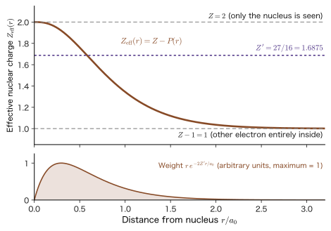
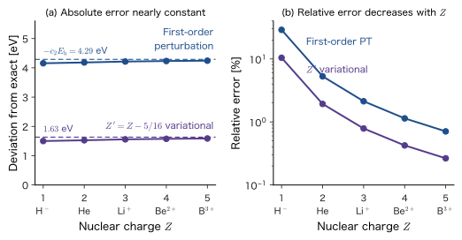
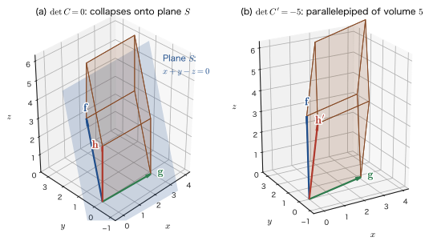
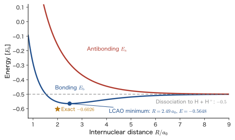

Chapter 31The Helium Atom by the Variational Method and the Linear Variational Method
In the previous chapter (Chapter 30), we learned the variational principle: “no matter what function is used to compute the expectation value of the energy, the value never falls below the energy of the true ground state.” In this chapter we put that principle to serious use on the helium atom. In Part V (Chapter 29), using perturbation theory, which regards the Coulomb repulsion between the electrons as a “small correction,” we estimated the ground-state energy of the helium atom as $-74.833\ \mathrm{eV}$. This is $4.2\ \mathrm{eV}$ (about 5%) higher than the experimental value $-79.005\ \mathrm{eV}$. In the variational method, we simply put a single parameter, the “effective nuclear charge” $Z'$, into the trial function and choose it so that the energy is minimized; the value then comes to $-77.490\ \mathrm{eV}$, within $1.5\ \mathrm{eV}$ of the experimental value. Moreover, the optimal $Z'$ is fixed by nothing more than completing the square, a high school mathematics calculation, as $Z'=Z-\tfrac{5}{16}=1.6875$. The reason it is smaller than the nuclear charge $Z=2$ is that the other electron shields the charge of the nucleus to some extent, and the fact that the amount of shielding comes out numerically as $\tfrac{5}{16}\approx0.31$ is the first highlight of this chapter.
The other main theme is the linear variational method (the Rayleigh–Ritz method). We write the trial function as a linear combination $\sum_ic_i\phi_i$ of predetermined functions (basis functions) $\phi_1,\phi_2,\dots,\phi_n$ and minimize the energy with respect to the coefficients $c_i$. The minimization of the energy then becomes the problem of solving the matrix equation $H\bm c=ES\bm c$, and the energy is obtained as a root of the secular equation $\det(H-ES)=0$. From molecular orbital calculations to band-structure calculations, modern electronic-structure calculations ultimately solve a matrix equation of this form (treated in detail from Part VII onward). Why the condition “the determinant is $0$” appears is a point where many students get stuck, so we carefully follow the diagrams of the determinant (the area in two dimensions, the volume in three dimensions, and the line and plane of solutions of simultaneous equations) and explain it in Section 31.5 until it makes sense.
Let us also look at the connections to, and the differences from, classical physics. The helium atom, in which the nucleus ($+2e_0$) and two electrons attract and repel one another, cannot be solved exactly, just like the classical-mechanics three-body problem of the Sun, Earth, and Moon. However, the shell theorem of electrostatics, “the charge on the inside may be regarded as gathered at the position of the nucleus” (AD 03, Chapter 36, Section 36.5 (in Japanese)), can be used as it is in quantum mechanics and is the foundation of our intuition about shielding. What differs is that the electron is not a “point” but a “cloud” of probability. The amount of shielding $\tfrac{5}{16}$ is a number determined by how the cloud is spread out.
There are also many connections to materials. Examining how far a trial function in product form can go shows why incorporating the way electrons avoid one another (electron correlation) becomes the central problem of later chapters. The “level repulsion” arising from two basis functions is the starting point of the bonding and antibonding orbitals of a chemical bond, of the level splitting of two coupled quantum dots, and of the formation of bands when atoms are lined up.
- To construct the trial function $\Psi_t=\phi_t(\bm r_1)\phi_t(\bm r_2)$ of the helium atom (a product of 1s orbitals containing the effective nuclear charge $Z'$), divide the expectation value of the Hamiltonian into three parts, and derive $E(Z')=-2\varepsilon_{1\mathrm{s}}\bigl(Z'^2-2ZZ'+\tfrac58Z'\bigr)$
- To derive $\expval{T}$, $\expval{1/r}$, and $\expval{1/r_{12}}=\tfrac58Z'/a_0$ for the hydrogen-like 1s orbital, and to explain that the second and third terms, at $\pm28.700\ \mathrm{eV}$, cancel each other at the optimal point
- To find $Z'=Z-\tfrac5{16}$ and $E_{\min}=2\varepsilon_{1\mathrm{s}}\bigl(Z-\tfrac5{16}\bigr)^2=-77.490\ \mathrm{eV}$ by completing the square (and by differentiation), and to compare them with first-order perturbation theory ($-74.833\ \mathrm{eV}$) and the experimental value ($-79.005\ \mathrm{eV}$). To explain the virial theorem, the correspondence with Slater's rules, isoelectronic series, ionization energy, and the meaning of the result that H$^-$ is not bound (the variational method gives only an upper bound)
- To understand the limitations of the product-form trial function (electron correlation), and how the Eckart-type, Chandrasekhar-type, and Hylleraas-type improvements approach the exact value $-2.90372\,E_{\mathrm h}$
- To be able to explain that the determinant is the area of a parallelogram in two dimensions and the volume of a parallelepiped in three dimensions, and that its being $0$ means the same thing as being “flattened,” being “linearly dependent,” and a system of homogeneous linear equations having a nontrivial solution
- To derive $H\bm c=ES\bm c$ and $\det(H-ES)=0$ from the linear variational method by the method of Lagrange multipliers, and to understand MacDonald's theorem (the approximate eigenvalues approach the exact values from above)
- To solve the secular equation for two basis functions and gain an outlook on level repulsion, the asymmetry between bonding and antibonding (the effect of the overlap integral $S$), the mixing angle, coupled quantum dots, and the LCAO treatment of H$_2^+$
Source notes: Yasuhide Mochizuki, “Physics Notes: Quantum Mechanics 3,” p. 35, and two pages of lecture notes on the meaning of the determinant.
31.1 The Helium Atom and the Trial Function — The Shielded Nuclear Charge $Z'$
From this section on, we begin calculating the electronic energy levels of the helium atom using the variational principle.
31.1.1 Setting up the problem — the true Hamiltonian and the trial function
Consider a system consisting of a nucleus of charge $+Ze_0$ and two electrons ($Z=2$ is the helium atom, $Z=1$ is H$^-$, $Z=3$ is Li$^+$, …). Since the nucleus is much heavier than the electrons, we regard it as being at rest at the origin; we denote the positions of electron 1 and electron 2 by $\bm{r}_1$ and $\bm{r}_2$, and the distance between the two electrons by $r_{12}=\lvert\bm{r}_1-\bm{r}_2\rvert$. The true Hamiltonian of this system, as derived in Chapter 29 (Section 29.1), is as follows.
\begin{equation} \hat{H}=-\frac{\hbar^2}{2m_{\mathrm e}}\bigl(\nabla_1^2+\nabla_2^2\bigr)-\frac{Ze_0^2}{4\pi\varepsilon_0}\left(\frac{1}{r_1}+\frac{1}{r_2}\right)+\frac{e_0^2}{4\pi\varepsilon_0}\,\frac{1}{\lvert\bm{r}_1-\bm{r}_2\rvert} \label{eq:31-H} \end{equation}The first term is the kinetic energy of the two electrons, the second term is the Coulomb attraction between the two electrons and the nucleus, and the third term is the Coulomb repulsion between the electrons. Because the last term contains $\bm{r}_1$ and $\bm{r}_2$ simultaneously, the Schrödinger equation $\hat{H}\Psi=E\Psi$ cannot be solved exactly. In Chapter 29, we regarded this third term as a “small perturbation” and, instead of $\hat{H}$, took as our starting point the exact solution of $\hat{H}_0$, which omits the electron–electron repulsion (a product of two hydrogen-like atoms).
In this chapter, we change our approach. The ground-state wave function for the case without electron–electron repulsion (Formula 29.1 of Chapter 29) was the product of hydrogen-like 1s orbitals of nuclear charge $Z$, $\dfrac{1}{\pi}\Bigl(\dfrac{Z}{a_0}\Bigr)^3e^{-Z(r_1+r_2)/a_0}$. Instead of using this as it is, we replace the value of the nuclear charge, $Z$, by a constant $Z'$ whose value is left undetermined, and take the resulting function as the trial function.
Definition 31.1: Trial function for helium-like atoms (effective nuclear charge $Z'$)
The following function, which contains a constant $Z'\gt0$, is taken as the trial function of the two-electron system.
\begin{equation} \Psi_t(\bm r_1,\bm r_2)=\phi_t(\bm r_1)\,\phi_t(\bm r_2)=\frac{1}{\pi}\left(\frac{Z'}{a_0}\right)^{3}e^{-\frac{Z'}{a_0}(r_1+r_2)},\qquad \phi_t(\bm r)=\frac{1}{\sqrt{\pi}}\left(\frac{Z'}{a_0}\right)^{3/2}e^{-Z'r/a_0} \label{eq:31-trial} \end{equation}Here $a_0=4\pi\varepsilon_0\hbar^2/(m_{\mathrm e}e_0^2)$ is the Bohr radius. The function $\phi_t$ has the same form as the 1s orbital of a hydrogen-like atom with nuclear charge $Z'e_0$. We call $Z'$ the effective nuclear charge. $Z'$ is an “undetermined number,” to be fixed by the variational principle.
The important point is that $Z'$ appears only inside the trial function; the Hamiltonian \eqref{eq:31-H} with which we calculate the energy retains the real nuclear charge $Z$. The expectation value
$$ E(Z')\equiv\mel{\Psi_t}{\hat{H}}{\Psi_t} $$becomes a function of $Z'$. By the variational principle, $E(Z')\ge E_0$ for any $Z'$ ($E_0$ is the energy of the true ground state), so the $Z'$ that makes $E(Z')$ smallest gives the best function of this form. The point $Z'=Z$ is precisely the unperturbed state $\Psi_0^{(0)}$ of the first-order perturbation treatment in Chapter 29.
Notation: $\Psi_t$ and $\phi_t$, $a_0$ and $a_{\mathrm B}$
To avoid confusion with the eigenfunction of the ground state, this book writes this function as $\Psi_t$, for “trial function” ($t$ stands for trial). The one-electron function $\phi_t$ is distinct from the basis functions $\phi_i$ used from Section 31.6 on. The fact that $a_{\mathrm B}$ in the related simulators (Variational Principle, Perturbation Theory) is the same quantity as this book's $a_0$ was stated in Chapter 30, Section 30.5.1. We also write the 1s level of the hydrogen atom as $\varepsilon_{1\mathrm{s}}=-\dfrac{m_{\mathrm e}e_0^4}{8\varepsilon_0^2h^2}=-\dfrac{E_{\mathrm h}}{2}=-13.606\ \mathrm{eV}$ (as in Chapter 29, Section 29.1.4), and the Hartree energy $E_{\mathrm h}=e_0^2/(4\pi\varepsilon_0a_0)=27.211\ \mathrm{eV}$ is related to it by $E_{\mathrm h}=-2\varepsilon_{1\mathrm{s}}$.
31.1.2 Why an effective nuclear charge? — the intuition behind shielding
Let us put ourselves in electron 1's place. Electron 1 feels the attraction from the nucleus ($+Ze_0$). At the same time, it feels the repulsion from electron 2. Electron 2 is not at a single point but spreads around the nucleus as a probability cloud. When electron 1 is at distance $r_1$ from the nucleus, a fraction $P(r_1)$ ($0\le P\le1$) of the cloud of electron 2 lies inside the sphere of radius $r_1$. By the shell theorem of electrostatics (AD 03, Chapter 36, Section 36.5 (in Japanese)), the electric field outside a spherically symmetric charge distribution is the same as that of a point charge with all of that charge gathered at the center. Therefore the attraction felt by electron 1 equals that due to a point charge $(Z-P(r_1))e_0$, obtained by adding to the nuclear charge $+Ze_0$ the charge $-P(r_1)e_0$ of the cloud of electron 2 inside the sphere (Figure 31.1).
Very close to the nucleus there is almost none of electron 2's cloud inside the sphere, so $Z-P\approx Z=2$; far from the nucleus, almost all of electron 2's cloud lies inside and $Z-P\approx Z-1=1$. In other words, the nuclear charge that each electron feels lies between 2 and 1. It is therefore natural to regard each electron as being in a “hydrogen-like 1s orbital with a nuclear charge $Z'$ smaller than $Z$.” The smaller the nuclear charge, the weaker the attraction, and the orbital spreads out to a size of about $a_0/Z'$.
Intuition: $Z'$ is not a “real charge” but a number that represents the average of the shielding
The effective nuclear charge $Z'$ is not a charge that actually exists. It packs the effect of the two electrons getting in each other's way into a single number, “the charge of the nucleus is somewhat weakened.” Considering shielding, we can expect $Z'$ to be smaller than $Z$, but how much smaller is not determined by the considerations so far. What decides it is the variational principle: the $Z'$ that minimizes $E(Z')$ is the best (that is, closest to the true wave function) among trial functions of this form. The result, found in Section 31.3, is $Z'=Z-\tfrac{5}{16}=1.6875$.
31.1.3 Normalization of the trial function and spin
To use the variational principle, the trial function must be normalized (otherwise one uses the Rayleigh quotient $\mel{\Psi}{\hat{H}}{\Psi}/\braket{\Psi}{\Psi}$; see Chapter 30, Section 30.2). Let us check that $\phi_t$ in Eq. \eqref{eq:31-trial} is normalized. The angular part gives $4\pi$ over the total solid angle, and using the formula $\int_0^\infty r^ne^{-\beta r}\dd r=n!/\beta^{n+1}$ (University Mathematics, Chapter 32, Section 32.2) with $n=2$ and $\beta=2Z'/a_0$, we obtain
$$ \int\lvert\phi_t\rvert^2\dd v=\frac{1}{\pi}\frac{Z'^3}{a_0^3}\cdot4\pi\int_0^\infty r^2e^{-2Z'r/a_0}\dd r =\frac{4Z'^3}{a_0^3}\cdot\frac{2!}{(2Z'/a_0)^3}=\frac{4Z'^3}{a_0^3}\cdot\frac{2a_0^3}{8Z'^3}=1 $$Therefore $\Psi_t=\phi_t(\bm r_1)\phi_t(\bm r_2)$ is also normalized, since $\iint\lvert\Psi_t\rvert^2\dd v_1\dd v_2=1\times1=1$. Because it has the form of a product, the double integral splits into a product of one-electron integrals.
Because the electron is a spin-$\tfrac12$ fermion, the total wave function (spatial part × spin part) must be antisymmetric under the exchange of the two electrons. In the ground state, the spatial part $\Psi_t$ is symmetric under the exchange $\bm r_1\leftrightarrow\bm r_2$, so the spin part is the antisymmetric singlet $\dfrac{1}{\sqrt2}\bigl[\alpha(1)\beta(2)-\beta(1)\alpha(2)\bigr]$ ($\alpha=\ket{\uparrow}$, $\beta=\ket{\downarrow}$, total spin $S=0$) (Chapter 29, Section 29.1.5). Since $\hat{H}$ contains no spin, the spin function has no effect on the calculation of expectation values (the spin function is normalized, and its integral merely gives $1$). In what follows, we consider only the spatial part.
Example 31.1: Size of the trial function — effective nuclear charge and the spread of the electron cloud
For the one-electron part $\phi_t$ of the trial function in Eq. \eqref{eq:31-trial}, express the mean value $\expval{r}$ of the distance from the atomic nucleus in terms of $Z'$ and $a_0$. For each of $Z'=2$ (no shielding) and $Z'=27/16$ (the optimal value found in Section 31.3), find $\expval{r}$ in Å, and state how much the electron cloud spreads because of shielding.
Solution. We have $\expval{r}=\displaystyle\int r\,\lvert\phi_t\rvert^2\dd v=\frac{1}{\pi}\frac{Z'^3}{a_0^3}\cdot4\pi\int_0^\infty r^3e^{-2Z'r/a_0}\dd r$. Using the formula $\int_0^\infty r^ne^{-\beta r}\dd r=n!/\beta^{n+1}$ with $n=3$ and $\beta=2Z'/a_0$, we get $\displaystyle\int_0^\infty r^3e^{-2Z'r/a_0}\dd r=\frac{3!}{(2Z'/a_0)^4}=\frac{6a_0^4}{16Z'^4}$, so
$$ \expval{r}=\frac{4Z'^3}{a_0^3}\cdot\frac{6a_0^4}{16Z'^4}=\frac{3a_0}{2Z'} $$Since $a_0=0.529\,177\ \text{Å}$, for $Z'=2$ we have $\expval{r}=\tfrac34a_0=0.397\ \text{Å}$, and for $Z'=27/16$ we have $\expval{r}=\dfrac{3}{2}\cdot\dfrac{16}{27}a_0=\dfrac89a_0=0.470\ \text{Å}$. When $Z'$ drops from 2 to $27/16$, the size of the electron cloud grows by a factor of $2/(27/16)=32/27\approx1.19$, that is, it spreads by about $19\ \%$. The function with $Z'=2$ has the same size as the 1s orbital of the He$^+$ ion, which has a single electron. This result shows that in the He atom, because of the shielding by the other electron, the electron cloud should be more spread out than in He$^+$.
31.1.4 What is the problem? — comparison with the value obtained when the electron–electron repulsion is neglected
Within the family of trial functions, the point where we set $Z'=Z$ is the exact ground state of the Hamiltonian $\hat{H}_0$, which neglects the electron–electron repulsion. The energy of $\hat{H}_0$ is $2Z^2\varepsilon_{1\mathrm{s}}$, which for helium ($Z=2$) is $8\times(-13.606\ \mathrm{eV})=-108.848\ \mathrm{eV}$. The experimentally measured ground-state energy of the helium atom is obtained from the energy required to remove the two electrons one after the other, that is, from the sum of the first ionization energy $24.587\ \mathrm{eV}$ and the second ionization energy $54.418\ \mathrm{eV}$, as $-(24.587+54.418)=-79.005\ \mathrm{eV}$. Therefore, neglecting the electron–electron repulsion makes the estimate as much as $37.8\ \%$ too low (the binding too strong). The task of this chapter is to compute the expectation value of $\Psi_t$ with the true $\hat{H}$, which includes the electron–electron repulsion, and then to optimize $Z'$.
Why do we treat the Hamiltonian exactly and the wave function approximately?
In perturbation theory, we split the Hamiltonian into a “solvable part $\hat{H}_0$” and a “perturbation $\hat{V}$,” and corrected both the wave function and the energy order by order. In the variational method, the Hamiltonian $\hat{H}$ is used as it really is (including the electron–electron repulsion), and only the form of the wave function is approximated. The energy $\mel{\Psi_t}{\hat{H}}{\Psi_t}$ is a quantity quadratic in $\Psi_t$, so an error of first order in the wave function produces an error of only second order in the energy (Chapter 30, Section 30.2.5), and even a rough wave function gives a surprisingly good energy.
31.1.5 The procedure of the variational method (the road map of this chapter)
Applying the “four steps of the variational method” of Chapter 30 (Section 30.1.4) to this problem gives the following.
- Fix the trial function: $\Psi_t$ in Eq. \eqref{eq:31-trial}. There is one parameter, $Z'$.
- Compute the expectation value: find $E(Z')=\mel{\Psi_t}{\hat{H}}{\Psi_t}$ as a function of $Z'$ (Section 31.2).
- Minimize: determine $Z'$ from $\dd E/\dd Z'=0$ or by completing the square (Section 31.3).
- Evaluate the result: compare with the experimental value and with perturbation theory, and confirm the meaning of the “upper bound” of the variational principle. Interpret the meaning of $Z'$ (shielding) (Section 31.3). Then see what happens when the trial function is improved further (Section 31.4).
In this chapter we derive from scratch $E(Z')$ and $Z'=Z-\tfrac5{16}$, for which only the results were announced in Chapter 29 (Section 29.6.2).
Related simulator: Variational Principle — Varying the Effective Nuclear Charge to Find the Total Energy of He (in ①, you can move $Z'$ to search for the minimum point of the total energy of a He-like ion).
31.2 Computing the Expectation Value in Three Parts
31.2.1 “Adding and subtracting” in the Hamiltonian — decomposition into three parts
Let us compute the expectation value $E(Z')=\mel{\Psi_t}{\hat{H}}{\Psi_t}$. Equation \eqref{eq:31-H} contains the attractive term of the nuclear charge $Z$, $-\dfrac{Ze_0^2}{4\pi\varepsilon_0}\Bigl(\dfrac1{r_1}+\dfrac1{r_2}\Bigr)$. Here, by adding and subtracting $Z'$, we split it into two:
$$ -\frac{Ze_0^2}{4\pi\varepsilon_0}\left(\frac1{r_1}+\frac1{r_2}\right) =-\frac{Z'e_0^2}{4\pi\varepsilon_0}\left(\frac1{r_1}+\frac1{r_2}\right)+\frac{(Z'-Z)\,e_0^2}{4\pi\varepsilon_0}\left(\frac1{r_1}+\frac1{r_2}\right) $$Combining the first term on the right-hand side with the kinetic-energy terms, we obtain two copies of the Hamiltonian $\hat{h}_{Z'}(i)=-\dfrac{\hbar^2}{2m_{\mathrm e}}\nabla_i^2-\dfrac{Z'e_0^2}{4\pi\varepsilon_0r_i}$ ($i=1,2$) of a hydrogen-like atom with nuclear charge $Z'e_0$. In this way, $\hat{H}$ splits into three parts.
\begin{equation} \hat{H}=\bigl[\hat{h}_{Z'}(1)+\hat{h}_{Z'}(2)\bigr]+\frac{(Z'-Z)\,e_0^2}{4\pi\varepsilon_0}\left(\frac1{r_1}+\frac1{r_2}\right)+\frac{e_0^2}{4\pi\varepsilon_0}\,\frac{1}{\lvert\bm{r}_1-\bm{r}_2\rvert} \label{eq:31-split} \end{equation}Therefore, the expectation value is also a sum of three terms.
\begin{equation} \begin{aligned} E(Z')=\;&\underbrace{\mel{\Psi_t}{-\frac{\hbar^2}{2m_{\mathrm e}}\bigl(\nabla_1^2+\nabla_2^2\bigr)-\frac{Z'e_0^2}{4\pi\varepsilon_0}\Bigl(\frac1{r_1}+\frac1{r_2}\Bigr)}{\Psi_t}}_{\text{first term}}\\ &+\underbrace{\mel{\Psi_t}{\frac{(Z'-Z)\,e_0^2}{4\pi\varepsilon_0}\Bigl(\frac1{r_1}+\frac1{r_2}\Bigr)}{\Psi_t}}_{\text{second term}} +\underbrace{\mel{\Psi_t}{\frac{e_0^2}{4\pi\varepsilon_0}\,\frac{1}{\lvert\bm{r}_1-\bm{r}_2\rvert}}{\Psi_t}}_{\text{third term}} \end{aligned} \label{eq:31-three} \end{equation}Why is this way of splitting so effective?
The operator of the first term is the sum of two Hamiltonians of a hydrogen-like atom with nuclear charge $Z'$. And the trial function $\Psi_t$ is precisely the product of the 1s orbitals of that hydrogen-like atom, so the first term can be found from an already known result (the 1s energy of a hydrogen-like atom, $Z'^2\varepsilon_{1\mathrm{s}}$) without computing an integral. The second term reduces to a question of the expectation value of $1/r$ alone, and the third term to that of $1/r_{12}$ alone. Thus, of the three integrals, two are one-electron quantities, and the remaining one (the electron–electron repulsion) has already been computed in Chapter 29.
31.2.2 The first term — the 1s energy of a hydrogen-like atom, $2Z'^2\varepsilon_{1\mathrm{s}}$
We check directly, just to be safe, that $\phi_t$ is an eigenfunction of $\hat{h}_{Z'}$ with eigenvalue $Z'^2\varepsilon_{1\mathrm{s}}$.
Derivation: $\hat{h}_{Z'}\phi_t=Z'^2\varepsilon_{1\mathrm{s}}\phi_t$
Let $\beta\equiv Z'/a_0$; then $\phi_t\propto e^{-\beta r}$. The Laplacian of a spherically symmetric function is $\nabla^2f=f''+\dfrac2rf'$ (University Mathematics, Chapter 6, Section 6.5), so for $f=e^{-\beta r}$, from $f'=-\beta f$ and $f''=\beta^2f$ we obtain
$$ \nabla^2\phi_t=\Bigl(\beta^2-\frac{2\beta}{r}\Bigr)\phi_t $$Substituting this into $\hat{h}_{Z'}=-\dfrac{\hbar^2}{2m_{\mathrm e}}\nabla^2-\dfrac{Z'e_0^2}{4\pi\varepsilon_0r}$ gives
$$ \hat{h}_{Z'}\phi_t=\Bigl[-\frac{\hbar^2\beta^2}{2m_{\mathrm e}}+\Bigl(\frac{\hbar^2\beta}{m_{\mathrm e}}-\frac{Z'e_0^2}{4\pi\varepsilon_0}\Bigr)\frac1r\Bigr]\phi_t $$From the definition of the Bohr radius, $a_0=\dfrac{4\pi\varepsilon_0\hbar^2}{m_{\mathrm e}e_0^2}$, we have $\dfrac{e_0^2}{4\pi\varepsilon_0}=\dfrac{\hbar^2}{m_{\mathrm e}a_0}$, so $\dfrac{Z'e_0^2}{4\pi\varepsilon_0}=\dfrac{\hbar^2Z'}{m_{\mathrm e}a_0}=\dfrac{\hbar^2\beta}{m_{\mathrm e}}$, and the coefficient of $1/r$ becomes $0$. What remains is the constant term, and using $E_{\mathrm h}=\dfrac{\hbar^2}{m_{\mathrm e}a_0^2}=-2\varepsilon_{1\mathrm{s}}$ we find
$$ -\frac{\hbar^2\beta^2}{2m_{\mathrm e}}=-\frac{\hbar^2}{2m_{\mathrm e}a_0^2}Z'^2=-\frac{E_{\mathrm h}}{2}Z'^2=Z'^2\varepsilon_{1\mathrm{s}} $$Hence $\hat{h}_{Z'}\phi_t=Z'^2\varepsilon_{1\mathrm{s}}\,\phi_t$ holds.
∎
Since $\hat{h}_{Z'}(1)$ is an operator that differentiates only with respect to the coordinate $\bm{r}_1$ of electron 1, the function $\phi_t(\bm r_2)$, which depends on $\bm{r}_2$ only, can be taken outside as a constant. Hence $\hat{h}_{Z'}(1)\Psi_t=\bigl[\hat{h}_{Z'}(1)\phi_t(\bm r_1)\bigr]\phi_t(\bm r_2)=Z'^2\varepsilon_{1\mathrm{s}}\Psi_t$, and similarly $\hat{h}_{Z'}(2)\Psi_t=Z'^2\varepsilon_{1\mathrm{s}}\Psi_t$. Therefore, using the fact that $\Psi_t$ is normalized,
\begin{equation} \text{first term}=\mel{\Psi_t}{\hat{h}_{Z'}(1)+\hat{h}_{Z'}(2)}{\Psi_t}=2Z'^2\varepsilon_{1\mathrm{s}} \label{eq:31-term1} \end{equation}Next, we split this $Z'^2\varepsilon_{1\mathrm{s}}$ per electron into kinetic energy and potential energy (to be used with the virial theorem in Section 31.3). Using $\nabla^2\phi_t=(\beta^2-2\beta/r)\phi_t$ and $\expval{1/r}=\beta$, which we obtain in the next subsection, the kinetic energy is
$$ \expval{T}_{\text{one-electron}}=-\frac{\hbar^2}{2m_{\mathrm e}}\bigl(\beta^2-2\beta\expval{1/r}\bigr)=-\frac{\hbar^2}{2m_{\mathrm e}}\bigl(\beta^2-2\beta^2\bigr)=\frac{\hbar^2\beta^2}{2m_{\mathrm e}}=\frac{Z'^2}{2}E_{\mathrm h}=-Z'^2\varepsilon_{1\mathrm{s}} $$and the potential energy is $\expval{V}_{\text{one-electron}}=-\dfrac{Z'e_0^2}{4\pi\varepsilon_0}\expval{1/r}=-Z'^2E_{\mathrm h}=2Z'^2\varepsilon_{1\mathrm{s}}$. The sum is $Z'^2\varepsilon_{1\mathrm{s}}$, and indeed $\expval{V}=-2\expval{T}$ holds (the virial theorem for a hydrogen-like atom, Chapter 17, Section 17.4).
31.2.3 The second term — the expectation value of $1/r$ and $2(Z'-Z)(-2Z'\varepsilon_{1\mathrm{s}})$
What we need for the second term is the expectation value of $1/r$ in the 1s orbital.
Derivation: $\expval{1/r}=Z'/a_0$
The angular integral gives $4\pi$, and for the radial integral we only need to use $\int_0^\infty r^ne^{-\beta'r}\dd r=n!/\beta'^{n+1}$ with $n=1$ and $\beta'=2Z'/a_0$.
$$ \expval{\frac1r}=\frac{1}{\pi}\frac{Z'^3}{a_0^3}\cdot4\pi\int_0^\infty r^2\cdot\frac1r\,e^{-2Z'r/a_0}\dd r =\frac{4Z'^3}{a_0^3}\cdot\frac{1!}{(2Z'/a_0)^2}=\frac{4Z'^3}{a_0^3}\cdot\frac{a_0^2}{4Z'^2}=\frac{Z'}{a_0} $$(From the $1/r$ in the integrand and the $r^2$ in the volume element, one factor of $r$ remains.) The dimension is (length)$^{-1}$, which is correct.
∎
Since $\Psi_t$ is of product form, $\mel{\Psi_t}{1/r_1}{\Psi_t}=\mel{\phi_t}{1/r}{\phi_t}\cdot\braket{\phi_t}{\phi_t}=Z'/a_0$, and the same holds for $1/r_2$. Therefore,
$$ \text{second term}=\frac{(Z'-Z)\,e_0^2}{4\pi\varepsilon_0}\cdot2\cdot\frac{Z'}{a_0}=2(Z'-Z)\,Z'\cdot\frac{e_0^2}{4\pi\varepsilon_0a_0}=2(Z'-Z)\,Z'E_{\mathrm h} $$Rewriting this using $E_{\mathrm h}=-2\varepsilon_{1\mathrm{s}}$, we obtain the following.
\begin{equation} \text{second term}=2\,(Z'-Z)\,(-2Z'\varepsilon_{1\mathrm{s}}) \label{eq:31-term2} \end{equation}This result can also be obtained directly from the “expectation value of the potential energy” in the preceding subsection. Dividing the per-electron $\expval{-Z'e_0^2/(4\pi\varepsilon_0r)}=2Z'^2\varepsilon_{1\mathrm{s}}$ by $-Z'$ gives $\expval{e_0^2/(4\pi\varepsilon_0r)}=-2Z'\varepsilon_{1\mathrm{s}}$. Multiplying this by the coefficient $(Z'-Z)$ and by the factor $2$ that arises from there being two electrons gives Eq. \eqref{eq:31-term2}.
31.2.4 The third term — the electron–electron repulsion $-\tfrac54Z'\varepsilon_{1\mathrm{s}}$
The third term is the expectation value of the electron–electron repulsion $e_0^2/(4\pi\varepsilon_0r_{12})$. What we need is $\expval{1/r_{12}}$ in a 1s-type cloud. This value is obtained from $\expval{1/r_{12}}=\tfrac58Z/a_0$, which we found in Chapter 29 (Sections 29.2.3–29.2.4) by two methods, the Legendre expansion and the shell theorem, by replacing $Z$ with $Z'$. Indeed, the 1s orbital with $Z'$ is the $Z'=1$ orbital with its coordinates shrunk by a factor of $1/Z'$ ($\phi_t(\bm r)=Z'^{3/2}\phi_{Z'=1}(Z'\bm r)$), and when all lengths are multiplied by $1/Z'$, $1/r_{12}$ is multiplied by $Z'$. Therefore
$$ \expval{\frac1{r_{12}}}=\frac58\cdot\frac{Z'}{a_0} $$holds (the dimension is (length)$^{-1}$, which is correct). We give another derivation, using $P(r)$, in Section 31.3.5.
Let us also verify this directly with the integral formula of Chapter 29. That formula, Formula 29.2 (Section 29.2), showed that for $\alpha\gt0$
$$ \iint\frac{e^{-\alpha(r_1+r_2)}}{\lvert\bm r_1-\bm r_2\rvert}\dd v_1\dd v_2=\frac{20\pi^2}{\alpha^5} $$holds. Using it, we can also confirm the result above. This time $\lvert\Psi_t\rvert^2=\dfrac{1}{\pi^2}\Bigl(\dfrac{Z'}{a_0}\Bigr)^6e^{-2Z'(r_1+r_2)/a_0}$, so we need only use this formula with $\alpha=2Z'/a_0$ (we have merely replaced $Z$ by $Z'$ where Chapter 29 had $\alpha=2Z/a_0$).
$$ \expval{\frac{1}{r_{12}}}=\frac{1}{\pi^2}\Bigl(\frac{Z'}{a_0}\Bigr)^6\cdot20\pi^2\Bigl(\frac{a_0}{2Z'}\Bigr)^5=\frac{20}{32}\cdot\frac{Z'^6a_0^5}{Z'^5a_0^6}=\frac58\cdot\frac{Z'}{a_0} $$Multiplying by $e_0^2/(4\pi\varepsilon_0a_0)=E_{\mathrm h}=-2\varepsilon_{1\mathrm{s}}$, we obtain
\begin{equation} \text{third term}=\frac{e_0^2}{4\pi\varepsilon_0}\expval{\frac{1}{r_{12}}}=\frac58Z'E_{\mathrm h}=-\frac54Z'\varepsilon_{1\mathrm{s}} \label{eq:31-term3} \end{equation}Let us check the dimension and the magnitude, just to be safe. $E_{\mathrm h}$ has the dimension of energy, and since $\tfrac58Z'=1.055$ (for $Z'=27/16$), the third term is a positive energy (repulsion) of about $1.055\,E_{\mathrm h}=28.70\ \mathrm{eV}$.
Discussion: Why is the expectation value of the electron–electron repulsion proportional to $Z'$?
Since the size of the electron cloud is of order $a_0/Z'$ (Example 31.1), the average distance between the two electrons shrinks in inverse proportion to $Z'$, and the Coulomb repulsion (inversely proportional to the distance) grows in proportion to $Z'$. The coefficient $\tfrac58=0.625$ is a number fixed by the fact that the two electron clouds overlap at the same position (the two electrons are in the same 1s orbital). $\expval{1/r_{12}}=\tfrac58Z'/a_0$ is a different quantity from the reciprocal of the average distance, $1/\expval{r_{12}}$.
31.2.5 The sum of the three terms — writing $E(Z')$ as a quadratic in $Z'$
We substitute the three results \eqref{eq:31-term1}, \eqref{eq:31-term2}, and \eqref{eq:31-term3} into Eq. \eqref{eq:31-three} and add them up. The second term can be expanded as $2(Z'-Z)(-2Z'\varepsilon_{1\mathrm{s}})=-4Z'^2\varepsilon_{1\mathrm{s}}+4ZZ'\varepsilon_{1\mathrm{s}}$, so we have
\begin{equation} \begin{aligned} E(Z')&=2Z'^2\varepsilon_{1\mathrm{s}}+\bigl(-4Z'^2+4ZZ'\bigr)\varepsilon_{1\mathrm{s}}-\frac54Z'\varepsilon_{1\mathrm{s}}\\ &=\Bigl(2Z'^2-4Z'^2+4ZZ'-\frac54Z'\Bigr)\varepsilon_{1\mathrm{s}} =\Bigl(-2Z'^2+4ZZ'-\frac54Z'\Bigr)\varepsilon_{1\mathrm{s}}\\ &=-2\,\varepsilon_{1\mathrm{s}}\Bigl(Z'^2-2ZZ'+\frac58Z'\Bigr) \end{aligned} \label{eq:31-EZ} \end{equation}In the last equality, we factored out $-2\varepsilon_{1\mathrm{s}}$ (inside the parentheses, $-2Z'^2+4ZZ'-\tfrac54Z'=-2\bigl(Z'^2-2ZZ'+\tfrac58Z'\bigr)$). Since $-2\varepsilon_{1\mathrm{s}}=E_{\mathrm h}$, taking the Hartree energy as the unit gives an extremely simple expression.
$$ E(Z')=Z'^2-2ZZ'+\frac58Z'\qquad[E_{\mathrm h}] $$This is a quadratic in $Z'$, and since the coefficient of $Z'^2$ is positive, it is a concave-up parabola. It therefore always has a minimum value, which we find by completing the square in Section 31.3.
Checking with a different decomposition — kinetic energy, nuclear attraction, and electron–electron repulsion
The three terms in Eq. \eqref{eq:31-EZ} divide the energy differently from the physical classification into kinetic energy, attraction between the electrons and the nucleus, and electron–electron repulsion. Let us check that counting by the physical classification gives the same result. The kinetic energy is $\tfrac12Z'^2E_{\mathrm h}$ per electron, and there are two electrons, so $\expval{T}=Z'^2E_{\mathrm h}$. The attraction to the nucleus (charge $Z$) is $-Ze_0^2\expval{1/r}/(4\pi\varepsilon_0)=-ZZ'E_{\mathrm h}$ per electron, and for two electrons $\expval{V_{\mathrm{ne}}}=-2ZZ'E_{\mathrm h}$. The electron–electron repulsion is $\expval{V_{\mathrm{ee}}}=\tfrac58Z'E_{\mathrm h}$. Adding these up, we obtain
$$ E(Z')=\Bigl(Z'^2-2ZZ'+\frac58Z'\Bigr)E_{\mathrm h} $$which agrees with Eq. \eqref{eq:31-EZ}. When $Z'$ is increased (that is, when the electron cloud shrinks), the kinetic energy ($\propto Z'^2$) increases, the nuclear attraction ($\propto-Z'$) becomes deeper, and the electron–electron repulsion ($\propto+Z'$) increases. The minimum point of the energy is determined by the tug of war among these three.
Example 31.2: The trial function with $Z'=Z$ — the same value as first-order perturbation
For the helium atom ($Z=2$), find the three terms and $E(Z')$ for $Z'=Z=2$, using $\varepsilon_{1\mathrm{s}}=-13.606\ \mathrm{eV}$. Compare the result with the first-order perturbation result of Chapter 29, $-74.833\ \mathrm{eV}$, and state the meaning of its difference from the value $-108.848\ \mathrm{eV}$ obtained by neglecting the electron–electron repulsion.
Solution. Substitute $Z'=Z=2$ into Eqs. \eqref{eq:31-term1}–\eqref{eq:31-term3}.
First term: $2Z'^2\varepsilon_{1\mathrm{s}}=2\cdot4\cdot(-13.606)=-108.848\ \mathrm{eV}$. Second term: since $Z'-Z=0$, it is $0$. Third term: $-\tfrac54Z'\varepsilon_{1\mathrm{s}}=-\tfrac54\cdot2\cdot(-13.606)=+34.015\ \mathrm{eV}$.
The sum is $E(2)=-108.848+0+34.015=-74.833\ \mathrm{eV}$. Computing with Eq. \eqref{eq:31-EZ} gives the same result: from $(2Z'^2-4Z'^2+4ZZ'-\tfrac54Z')=(8-16+16-\tfrac52)=5.5$ we get $E(2)=5.5\times(-13.606)=-74.833\ \mathrm{eV}$, in agreement.
This is exactly the same value as the first-order perturbation result of Chapter 29, $(2Z^2-\tfrac54Z)\varepsilon_{1\mathrm{s}}=-74.833\ \mathrm{eV}$. The first-order perturbation energy $E_0^{(0)}+E^{(1)}$ is the expectation value of $\hat{H}$ taken in the unperturbed state $\Psi_0^{(0)}$, so it is nothing other than the point $Z'=Z$ of the family of trial functions. That is, first-order perturbation is “a variational calculation that does not optimize $Z'$”, and the difference $+34.015\ \mathrm{eV}$ from the first value, $-108.848\ \mathrm{eV}$, is the expectation value of the electron–electron repulsion itself.
31.3 Completing the Square and $Z'=Z-5/16$ — Quantifying the Shielding
31.3.1 Completing the square — finding the $Z'$ that gives the minimum
We complete the square in $Z'$ for the expression inside the parentheses in Eq. \eqref{eq:31-EZ} (the same calculation as the rewriting of a quadratic function in high school mathematics). Since $-2ZZ'+\tfrac58Z'=-2\bigl(Z-\tfrac5{16}\bigr)Z'$, we can write
$$ Z'^2-2ZZ'+\frac58Z'=Z'^2-2\Bigl(Z-\frac5{16}\Bigr)Z'=\Bigl\{Z'-\Bigl(Z-\frac5{16}\Bigr)\Bigr\}^2-\Bigl(Z-\frac5{16}\Bigr)^2 $$(here we used $x^2-2ax=(x-a)^2-a^2$ with $a=Z-\tfrac5{16}$). Substituting this into Eq. \eqref{eq:31-EZ}, we obtain
\begin{equation} E(Z')=-2\varepsilon_{1\mathrm{s}}\Bigl\{Z'-\Bigl(Z-\frac5{16}\Bigr)\Bigr\}^2+2\varepsilon_{1\mathrm{s}}\Bigl(Z-\frac5{16}\Bigr)^2 \label{eq:31-square} \end{equation}The 1s level of the hydrogen atom, $\varepsilon_{1\mathrm{s}}=-13.606\ \mathrm{eV}$, is negative, so $-2\varepsilon_{1\mathrm{s}}\gt0$. Therefore the first term (the squared term) is greater than or equal to $0$, and it becomes $0$ only when $Z'=Z-\tfrac5{16}$. The second term is a constant independent of $Z'$, so $E(Z')$ takes its minimum value at $Z'=Z-\tfrac5{16}$.
Theorem 31.1: The $Z'$ variation for helium-like atoms
The energy $E(Z')$ of the trial function \eqref{eq:31-trial} is minimized, with the optimal value of the parameter and the minimum energy given by
\begin{equation} Z'_{\mathrm{opt}}=Z-\frac{5}{16},\qquad E_{\min}=2\varepsilon_{1\mathrm{s}}\Bigl(Z-\frac5{16}\Bigr)^2=-\Bigl(Z-\frac5{16}\Bigr)^2E_{\mathrm h} \label{eq:31-Zopt} \end{equation}Moreover, in terms of the deviation from the minimum point, $E(Z')=E_{\min}+(Z'-Z'_{\mathrm{opt}})^2E_{\mathrm h}$. By the variational principle, the minimum value is an upper bound on the true ground-state energy.
Let us also check this by differentiation. Differentiating $E(Z')=E_{\mathrm h}\bigl(Z'^2-2ZZ'+\tfrac58Z'\bigr)$ with respect to $Z'$ and setting the result equal to $0$, we obtain
$$ \frac{\dd E}{\dd Z'}=E_{\mathrm h}\Bigl(2Z'-2Z+\frac58\Bigr)=0\quad\Longrightarrow\quad Z'=Z-\frac{5}{16} $$which is the same answer as that from completing the square. The second derivative is $\dfrac{\dd^2E}{\dd Z'^2}=2E_{\mathrm h}=-4\varepsilon_{1\mathrm{s}}=54.424\ \mathrm{eV}\gt0$, so this is indeed a minimum. The result $Z'-Z=-\tfrac5{16}$ means that “$Z'$ is smaller than the nuclear charge $Z$ by $\tfrac5{16}=0.3125$,” and it expresses the magnitude of the shielding by the other electron. We will examine this interpretation more closely in Section 31.3.5.
31.3.2 Numerical values for the helium atom — $-77.490\ \mathrm{eV}$
For the helium atom, $Z=2$, so the optimal effective nuclear charge is $Z'=2-\tfrac{5}{16}=\tfrac{27}{16}=1.6875$, and the energy at that point is found by substituting $Z=2$ and $\varepsilon_{1\mathrm{s}}=-13.606\ \mathrm{eV}$ into Eq. \eqref{eq:31-Zopt}.
Illustration 31.1: The variational energy of the helium atom
Substitute $Z=2$ and $\varepsilon_{1\mathrm{s}}=-13.606\ \mathrm{eV}$ into Eq. \eqref{eq:31-Zopt} to find $E_{\min}$, and compare it with the first-order perturbation value $-74.833\ \mathrm{eV}$ and the experimental value $-79.005\ \mathrm{eV}$.
Solution. We have $Z-\dfrac5{16}=2-0.3125=1.6875=\dfrac{27}{16}$, and $\Bigl(\dfrac{27}{16}\Bigr)^2=\dfrac{729}{256}=2.847\,656\,25$. Therefore
$$ E_{\min}=2\varepsilon_{1\mathrm{s}}\Bigl(Z-\frac5{16}\Bigr)^2=2\times(-13.606\ \mathrm{eV})\times2.847\,656\,25=-77.490\ \mathrm{eV} $$(if we instead use $E_{\mathrm h}=27.2114\ \mathrm{eV}$ and compute $-\tfrac{729}{256}E_{\mathrm h}$, we get $-77.489\ \mathrm{eV}$; the difference of $0.001\ \mathrm{eV}$ is due to the rounding of $\varepsilon_{1\mathrm{s}}$). This is $2.657\ \mathrm{eV}$ lower than the first-order perturbation value $-74.833\ \mathrm{eV}$ (Example 31.2) and close to the experimental value $-79.005\ \mathrm{eV}$. The difference from the experimental value is $-77.490-(-79.005)=+1.515\ \mathrm{eV}$, and the relative error is $1.515/79.005=1.9\ \%$ (smaller than the $5.3\ \%$ of first-order perturbation). Of the $4.172\ \mathrm{eV}$ difference between the first-order perturbation value and the experimental value, $2.657/4.172=64\ \%$ has been captured merely by adjusting the single parameter $Z'$.
Finally, let us check the consistency with the variational principle. The value $E_{\min}=-77.490\ \mathrm{eV}$ is higher than the true ground-state energy ($\approx-79.0\ \mathrm{eV}$). If a calculation came out lower than $-79\ \mathrm{eV}$, then either the calculation contains an error or the trial function fails to satisfy conditions such as the Pauli exclusion principle.

31.3.3 Numerical values of the three terms — the second and third terms cancel exactly
At the optimal $Z'=27/16$, let us write out the values of the three terms in Eq. \eqref{eq:31-three}. As Figure 31.2(b) shows, the second and third terms cancel each other exactly.
Example 31.3: The values of the three terms at the optimum, and why they cancel
For $Z=2$, $Z'=27/16$, and $\varepsilon_{1\mathrm{s}}=-13.606\ \mathrm{eV}$, find the values of the first, second, and third terms and their sum. Explain, for general $Z$, why the sum of the second and third terms is $0$.
Solution. First term: $2Z'^2\varepsilon_{1\mathrm{s}}=2\times2.847\,656\,25\times(-13.606)=-77.490\ \mathrm{eV}$.
Second term: $-2Z'\varepsilon_{1\mathrm{s}}=-2\times1.6875\times(-13.606)=+45.920\ \mathrm{eV}$ (this is $\expval{e_0^2/(4\pi\varepsilon_0r)}$ per electron), and since $Z'-Z=-\tfrac5{16}=-0.3125$, the second term $=2\times(-0.3125)\times45.920=-28.700\ \mathrm{eV}$.
Third term: $-\tfrac54Z'\varepsilon_{1\mathrm{s}}=-1.25\times1.6875\times(-13.606)=+28.700\ \mathrm{eV}$.
Sum: $-77.490-28.700+28.700=-77.490\ \mathrm{eV}$, which agrees with the value in Illustration 31.1.
Adding the second and third terms for general $Z'$, we obtain
$$ 2(Z'-Z)(-2Z'\varepsilon_{1\mathrm{s}})+\Bigl(-\frac54Z'\varepsilon_{1\mathrm{s}}\Bigr)=-4Z'\varepsilon_{1\mathrm{s}}\Bigl[(Z'-Z)+\frac5{16}\Bigr] $$(factoring out $-4Z'\varepsilon_{1\mathrm{s}}$, we have $-\tfrac54Z'\varepsilon_{1\mathrm{s}}=-4Z'\varepsilon_{1\mathrm{s}}\cdot\tfrac5{16}$). This becomes $0$ when $Z'-Z=-\tfrac5{16}$, which is precisely the condition that minimizes $E(Z')$ (Section 31.3.1). That is, at the minimum point, the sum of the second and third terms is zero, and the energy is determined by the first term, $2Z'^2\varepsilon_{1\mathrm{s}}$, alone.
Discussion: The physical meaning of the cancellation
The second term is the energy of the extra attraction due to the fact that the nuclear charge is $Z$ and not $Z'$ (it is negative because $Z'\lt Z$). The third term is the energy of the repulsion between the electrons (positive). That these two exactly balance means that the energy of “the helium atom with electron–electron repulsion” is the same as the energy $2Z'^2\varepsilon_{1\mathrm{s}}$ of “a system of two hydrogen-like atoms with no electron–electron repulsion and with nuclear charge $Z'=27/16$.” The idea of the effective nuclear charge $Z'$ was to absorb the electron–electron repulsion into the form “the nuclear charge is weakened by $\tfrac5{16}$.” In equations: the extra attraction felt by the two electrons, $2(Z-Z')Z'E_{\mathrm h}$, equals the repulsion $\tfrac58Z'E_{\mathrm h}$, that is, $2(Z-Z')=\tfrac58$, and from this $Z-Z'=\tfrac5{16}$ follows.
31.3.4 The virial theorem — $\expval{V}=-2\expval{T}$ at the optimum
In Chapter 30 (Section 30.3.2), we saw that the virial theorem follows from the variation in which the whole trial function is stretched and contracted by a factor of $\eta$. Varying the effective nuclear charge $Z'$ is nothing other than stretching and contracting the two electron clouds together (on the length scale $a_0/Z'$). Therefore, at the optimal $Z'$, the virial theorem $\expval{V}=-2\expval{T}$ ($V$ being the sum of the Coulomb-type potential energies) should hold. Let us verify this.
Derivation: Optimization of $Z'$ and the virial theorem
The expectation values of the kinetic energy, the nuclear attraction, and the electron–electron repulsion are (Section 31.2.5) $\expval{T}=Z'^2E_{\mathrm h}$, $\expval{V_{\mathrm{ne}}}=-2ZZ'E_{\mathrm h}$, and $\expval{V_{\mathrm{ee}}}=\tfrac58Z'E_{\mathrm h}$. The kinetic energy is proportional to $Z'^2$ and the potential energy $\expval{V}=\expval{V_{\mathrm{ne}}}+\expval{V_{\mathrm{ee}}}$ is proportional to $Z'$, so if we let $T_1\equiv E_{\mathrm h}$ and $V_1\equiv(-2Z+\tfrac58)E_{\mathrm h}$, we can write
$$ E(Z')=Z'^2T_1+Z'V_1,\qquad \expval{T}=Z'^2T_1,\qquad \expval{V}=Z'V_1 $$Multiplying both sides of $\dd E/\dd Z'=2Z'T_1+V_1=0$ by $Z'$, we obtain $2Z'^2T_1+Z'V_1=0$, that is, $2\expval{T}+\expval{V}=0$.
∎
Example 31.4: The virial ratio of the helium atom
For $Z=2$, find $\expval{T}$, $\expval{V_{\mathrm{ne}}}$, $\expval{V_{\mathrm{ee}}}$, the total energy, and the virial ratio $\expval{V}/\expval{T}$ in units of $E_{\mathrm h}$, both for $Z'=27/16$ (the optimal value) and for $Z'=2$ (first-order perturbation).
Solution. For $Z'=27/16=1.6875$, we have $\expval{T}=Z'^2=2.847\,66$, $\expval{V_{\mathrm{ne}}}=-2ZZ'=-4\times1.6875=-6.75$, and $\expval{V_{\mathrm{ee}}}=\tfrac58Z'=1.054\,69$. Therefore $\expval{V}=-6.75+1.054\,69=-5.695\,31$, and the total energy is $E=2.847\,66-5.695\,31=-2.847\,66\,E_{\mathrm h}$ ($=-77.49\ \mathrm{eV}$), so that $E=-\expval{T}$. The virial ratio is
$$ \frac{\expval{V}}{\expval{T}}=\frac{-5.695\,31}{2.847\,66}=-2.0000 $$and the virial theorem is satisfied.
For $Z'=2$, we have $\expval{T}=4$, $\expval{V_{\mathrm{ne}}}=-8$, $\expval{V_{\mathrm{ee}}}=1.25$, $\expval{V}=-6.75$, and $E=-2.75\,E_{\mathrm h}$; the virial ratio is $-6.75/4=-1.6875$, which is not $-2$. We have $2\expval{T}+\expval{V}=8-6.75=1.25\,E_{\mathrm h}\ne0$.
That is, the virial theorem is a consequence of “the energy is stationary (it is at the variational minimum),” and it does not hold for an arbitrary trial function. Conversely, how far the virial ratio deviates from $-2$ is a measure of how far the size of the electron cloud deviates from the optimum. Here it shows that at $Z'=2$, $\expval{T}$ is “too large” (the electron cloud is too contracted).
31.3.5 Interpretation of the shielding — where $Z'=2-\tfrac{5}{16}=1.6875$ comes from
The effective nuclear charge $Z'=2-\tfrac5{16}=1.6875$ can be interpreted as the result of shielding by an electron. Let us check this interpretation quantitatively using the figure in Section 31.1.2. When electron 1 is at a distance $r$ from the nucleus, the probability $P(r)$ that the cloud of electron 2 lies inside the sphere of radius $r$ is, from the 1s-type density $\lvert\phi_t\rvert^2\propto e^{-2Z'r/a_0}$, with $x=2Z'r/a_0$,
$$ P(r)=\int_0^r4\pi r'^2\lvert\phi_t(r')\rvert^2\dd r'=\frac12\int_0^{x}x'^2e^{-x'}\dd x'=1-e^{-x}\Bigl(1+x+\frac{x^2}{2}\Bigr) $$where integration by parts was applied twice. By the shell theorem (also used in Chapter 29, Sections 29.2.4 and 29.2.5), the effective nuclear charge felt by electron 1 is $Z_{\mathrm{eff}}(r)=Z-P(r)$, which is $Z=2$ right near the nucleus ($r\to0$) and $Z-1=1$ far away ($r\to\infty$). This is the brown curve in Figure 31.3.

Incidentally, the amount of shielding varies with $r$, yet the effective nuclear charge $Z'$ of the trial function is a single number. What kind of average this single number corresponds to can be shown exactly, as follows.
Derivation: $\tfrac{5}{16}$ is the average of $P(r)$ weighted by $1/r$
The electron density $\rho(r)=\lvert\phi_t\rvert^2$ is spherically symmetric, and $P(r)=\int_{r'\lt r}\rho\,\dd v'$. In what follows we write everything in atomic units with $a_0=1$, taking $E_{\mathrm h}$ as the unit of energy.
[i] In the expectation value of the electron–electron repulsion, averaging over the angular directions gives $1/r_{12}\to1/r_{\gt}$ ($r_{\gt}=\max(r_1,r_2)$; the $l=0$ term of the Legendre expansion in Chapter 29, Section 29.2.3), so that
$$ \expval{\frac1{r_{12}}}=\iint\rho(r_1)\rho(r_2)\frac{1}{r_{\gt}}\dd v_1\dd v_2=2\iint_{r_2\lt r_1}\rho(r_1)\rho(r_2)\frac{1}{r_1}\dd v_1\dd v_2=2\int\rho(r_1)\frac{P(r_1)}{r_1}\dd v_1=2\expval{\frac{P(r)}{r}} $$(The region $r_1\lt r_2$ and the region $r_1\gt r_2$ contribute equally under the exchange $1\leftrightarrow2$. In the region $r_2\lt r_1$, $1/r_{\gt}=1/r_1$, and the integral over $r_2$ gives $P(r_1)$.)
[ii] The total energy is the sum of the kinetic energies of the two electrons, the nuclear attraction, and the electron–electron repulsion, so
$$ E=2\expval{T}-2Z\expval{\frac1r}+2\expval{\frac{P(r)}{r}}=2\Bigl[\expval{T}-\Bigl\langle\frac{Z-P(r)}{r}\Bigr\rangle\Bigr] $$This is twice the one-electron energy obtained by regarding each electron as being attracted by the effective nuclear charge $Z_{\mathrm{eff}}(r)=Z-P(r)$.
[iii] We rewrite the average of $Z_{\mathrm{eff}}(r)/r$ in terms of a single number $Z-\sigma$. That is, we define $\sigma\equiv\expval{P(r)/r}\big/\expval{1/r}$ (the average of $P(r)$ weighted by $\rho(r)/r$, the weight of the attraction energy). From Eq. [i] and the result of Section 31.2, $\expval{1/r_{12}}=\tfrac58Z'$ and $\expval{1/r}=Z'$, we obtain
$$ \sigma=\frac{\expval{1/r_{12}}/2}{\expval{1/r}}=\frac{\tfrac58Z'/2}{Z'}=\frac{5}{16} $$Since $Z'$ cancels out, the shielding constant $\sigma$ is the constant $\tfrac5{16}$, independent of the value of $Z'$ (this is because electron clouds of different sizes are all similar figures with the same shape). Therefore $E(Z')=2\bigl[\tfrac12Z'^2-(Z-\tfrac5{16})Z'\bigr]$, which is the same as the minimization problem for the one-electron energy $\tfrac12Z'^2-(Z-\sigma)Z'$ of a hydrogen-like atom with effective nuclear charge $Z-\tfrac5{16}$ (the minimum point is $Z'=Z-\sigma$), and $Z'=Z-\tfrac5{16}$ is obtained once again.
∎
To summarize, $\tfrac5{16}=0.3125$ is the magnitude of shielding in the sense that “the other electron, averaged over the attraction energy of one electron, cancels only $0.3125$ of the nuclear charge $Z$.” The coefficient is half of $\tfrac58$ because the electron–electron repulsion energy $\tfrac58Z'$ is the sum of the repulsions for which the two electrons are responsible, one share per electron. One may also say, “One electron does not shield the other electron completely, but shields only about 30%.” If the whole cloud of the other electron were on the inner side (the nucleus side), we would have $\sigma=1$ ($Z'=1$), but in reality, near the nucleus most of the cloud lies on the outer side, so $\sigma$ is much smaller than 1. Let us check with concrete numbers. For a 1s-type cloud, the radius at which $P(r)=\tfrac12$ is $r=1.34\,a_0/Z'$ ($0.79\,a_0$ for $Z'=27/16$). Also, at $r=a_0/(2Z')\approx0.30\,a_0$, where the weight $r\,e^{-2Z'r/a_0}$ is maximal, we have only $P=1-e^{-1}\bigl(1+1+\tfrac12\bigr)\approx0.08$, and even at the mean position of this weight, $r=a_0/Z'$, $P=1-e^{-2}(1+2+2)\approx0.32$. Since it is the region near the nucleus that matters for the attraction energy, $\sigma$, the average of $P$ with this weight, is as small as $0.31$.
Correspondence with Slater's rules
In Slater's rules of Chapter 18 (Section 18.4), the amount of shielding by the other electron in the same 1s orbital is taken to be $0.30$ (an empirical law that Slater proposed in 1930 from experimental data and wave-function calculations). The resulting effective nuclear charge of helium is $Z^*=2-0.30=1.70$, which is close to the variational $Z'=2-0.3125=1.6875$. We see that the empirical $0.30$ corresponds to the theoretical $\tfrac5{16}=0.3125$.
Example 31.5: What happens if we use Slater's $Z^*=1.70$?
Find the energy obtained when the value from Slater's rules, $Z'=1.70$, is used in the trial function of the helium atom (Eq. \eqref{eq:31-trial}), and compare it with the optimal value $-77.490\ \mathrm{eV}$. Why does the energy hardly change even when $Z'$ deviates slightly?
Solution. Substituting $Z=2$ and $Z'=1.70$ into Eq. \eqref{eq:31-EZ} gives $Z'^2-2ZZ'+\tfrac58Z'=2.89-6.8+1.0625=-2.8475$, so $E=-2\varepsilon_{1\mathrm{s}}\times(-2.8475)=27.212\times(-2.8475)=-77.486\ \mathrm{eV}$. The difference from the optimal value $-77.490\ \mathrm{eV}$ is only $0.004\ \mathrm{eV}$.
The reason is that $E(Z')$ is a parabola around the minimum point, $E(Z')=E_{\min}+(Z'-Z'_{\mathrm{opt}})^2E_{\mathrm h}$ (Theorem 31.1). For the deviation from the minimum point, $Z'-Z'_{\mathrm{opt}}=1.70-1.6875=0.0125$, the rise in energy is proportional to its square, $(0.0125)^2\times27.212\ \mathrm{eV}=0.004\ \mathrm{eV}$, which is very small. In the variational principle, when the parameter has an error of first order, the error in the energy enters only at second order.
31.3.6 First-order perturbation and the variational method — two points on the same parabola
Let us set the results so far alongside the perturbation theory of Chapter 29. On the parabola $E(Z')$ of Figure 31.2(a), the point $Z'=Z=2$ gives the first-order perturbation value, and the minimum point $Z'=27/16$ gives the variational value. By optimizing $Z'$, the energy was lowered by $2.657\ \mathrm{eV}$, and the difference from the experimental value shrank from $4.172\ \mathrm{eV}$ to $1.515\ \mathrm{eV}$.
| Estimate | Trial-function parameter | $E$ [eV] | Difference from experimental value [eV] | Relative error |
|---|---|---|---|---|
| Electron–electron repulsion neglected | $Z'=Z=2$ (eigenvalue of $\hat{H}_0$) | $-108.848$ | $-29.843$ | 37.8% |
| First-order perturbation | $Z'=Z=2$ (expectation value of $\hat{H}$) | $-74.833$ | $+4.172$ | 5.3% |
| Variational method (one parameter) | $Z'=27/16$ | $-77.490$ | $+1.515$ | 1.9% |
| Experimental value | — | $-79.005$ | — | — |
Note that only the value in the first row is lower than the experimental value. $\hat{H}_0$, which neglects the electron–electron repulsion, is not the true $\hat{H}$, so its eigenvalue is not an upper bound given by the variational principle. In contrast, the second and third rows are expectation values of the true $\hat{H}$, so they are necessarily higher than the experimental value (which is close to the true value).
31.3.7 The He-like ion series — H$^-$, He, Li$^+$, Be$^{2+}$, B$^{3+}$
Eq. \eqref{eq:31-Zopt} can be used for the entire series of two-electron systems (the isoelectronic series) simply by changing the value of $Z$. Table 31.2 compares the results for $Z=1$ (H$^-$), $2$ (He), $3$ (Li$^+$), $4$ (Be$^{2+}$), and $5$ (B$^{3+}$) with the nonrelativistic exact values (the values with the mass of the atomic nucleus taken to be infinite, from high-precision calculations of the Hylleraas type; the same values as in Table 29.2 of Chapter 29).
| $Z$ | Ion | $Z'=Z-\tfrac5{16}$ | Variational $-(Z-\tfrac5{16})^2$ | Exact value | Variational − exact [eV] | Relative error of variational | First-order perturbation $-Z^2+\tfrac58Z$ | First-order − exact [eV] |
|---|---|---|---|---|---|---|---|---|
| 1 | H$^-$ | 0.6875 | $-0.47266$ | $-0.52775$ | $+1.50$ | 10.4% | $-0.37500$ | $+4.16$ |
| 2 | He | 1.6875 | $-2.84766$ | $-2.90372$ | $+1.53$ | 1.9% | $-2.75000$ | $+4.18$ |
| 3 | Li$^+$ | 2.6875 | $-7.22266$ | $-7.27991$ | $+1.56$ | 0.79% | $-7.12500$ | $+4.22$ |
| 4 | Be$^{2+}$ | 3.6875 | $-13.59766$ | $-13.65557$ | $+1.58$ | 0.42% | $-13.50000$ | $+4.23$ |
| 5 | B$^{3+}$ | 4.6875 | $-21.97266$ | $-22.03097$ | $+1.59$ | 0.26% | $-21.87500$ | $+4.24$ |
The relative error becomes smaller as $Z$ increases, but the absolute error of the energy is almost constant: between $1.5\ \mathrm{eV}$ and $1.6\ \mathrm{eV}$ for the variational method, and about $4.2\ \mathrm{eV}$ for first-order perturbation (Figure 31.4(a)). The variational value is always higher than the exact value (an upper bound by the variational principle).

Example 31.6: Why the absolute error of the variational energy becomes constant at about $1.6\ \mathrm{eV}$
By comparison with the $1/Z$ expansion of Chapter 29, $E_{\text{exact}}(Z)=E_{\mathrm h}\bigl[-Z^2+\tfrac58Z+c_2+c_3/Z+\cdots\bigr]$ (with $c_2=-0.157\,666$ and $c_3=+0.00870$; these $c_2$ and $c_3$ are coefficients of the 1/Z expansion and are different from the coefficient vector $\bm c$ of Section 31.6), show that the error of the variational energy $E_{\mathrm{var}}(Z)=-(Z-\tfrac5{16})^2E_{\mathrm h}$ approaches a constant value as $Z\to\infty$, and find that value in eV. Also check the result for $Z=4$ (Be$^{2+}$).
Solution. Expanding the variational energy gives $E_{\mathrm{var}}=-\bigl(Z^2-\tfrac58Z+\tfrac{25}{256}\bigr)E_{\mathrm h}=E_{\mathrm h}\bigl[-Z^2+\tfrac58Z-\tfrac{25}{256}\bigr]$. Comparing this with the exact expansion, we see that $E_{\mathrm{var}}$ reproduces exactly the $Z^2$ term (the term that ignores the electron–electron repulsion) and the $Z$ term (the first-order electron–electron repulsion, $\tfrac58Z$). Only the $Z^0$ term differs. The error is
$$ E_{\mathrm{var}}-E_{\text{exact}}=E_{\mathrm h}\Bigl[-\frac{25}{256}-c_2-\frac{c_3}{Z}-\cdots\Bigr]\ \xrightarrow{\ Z\to\infty\ }\ E_{\mathrm h}\Bigl[-0.097\,656+0.157\,666\Bigr]=0.060\,010\,E_{\mathrm h}=1.633\ \mathrm{eV} $$The $Z^0$ term that first-order perturbation theory fails to reproduce when $Z$ is large is $c_2=-0.157\,666\,E_{\mathrm h}$ ($-4.29\ \mathrm{eV}$), and the variational method captures $0.097\,656/0.157\,666=62\ \%$ of it. The remaining $38\ \%$ ($0.0600\,E_{\mathrm h}=1.63\ \mathrm{eV}$) can be divided into two causes. One is the error caused by restricting the shape of the orbital to $e^{-Z'r/a_0}$; this can be recovered by using the Hartree–Fock orbital (the Hartree–Fock value of the $Z^0$ term is about $-0.111\,E_{\mathrm h}$, so $0.111-0.0977\approx0.0134\,E_{\mathrm h}=0.36\ \mathrm{eV}$). The other is the limiting value, as $Z\to\infty$, of the energy of the electron correlation (Section 31.4) that cannot be captured in a product form; it is $0.1577-0.111\approx0.0467\,E_{\mathrm h}=1.27\ \mathrm{eV}$ (this has the same structure as the decomposition $0.38\ \mathrm{eV}+1.14\ \mathrm{eV}$ for He in Section 31.4.1).
For $Z=4$, $E_{\mathrm{var}}=-(3.6875)^2=-13.597\,66\,E_{\mathrm h}$ and the exact value (Table 31.2) is $-13.655\,57\,E_{\mathrm h}$, so the difference is $0.057\,91\,E_{\mathrm h}=1.576\ \mathrm{eV}$. Substituting $Z=4$ into the formula above gives $0.060\,010-0.008\,70/4=0.057\,84\,E_{\mathrm h}$ (including terms up to the $3$rd order), which agrees with the tabulated value $0.057\,91$ to within $10^{-4}\,E_{\mathrm h}$.
31.3.8 Ionization energy — the variational value is a lower bound
Example 31.7: The first ionization energy of helium by the variational method
Find the first ionization energy $\mathrm{IP}=E(\mathrm{He}^+)-E(\mathrm{He})$ of the helium atom from the variational value $-77.490\ \mathrm{eV}$, and compare it with the experimental value $24.587\ \mathrm{eV}$ and with the first-order perturbation value $20.409\ \mathrm{eV}$. Also explain why the variational value is smaller than the experimental value.
Solution. He$^+$ is a hydrogen-like ion with one electron ($Z=2$); there is no electron–electron repulsion, and its energy is exactly $E(\mathrm{He}^+)=Z^2\varepsilon_{1\mathrm{s}}=4\times(-13.606)=-54.424\ \mathrm{eV}$. Hence
$$ \mathrm{IP}=-54.424-(-77.490)=23.066\ \mathrm{eV} $$The difference from the experimental value $24.587\ \mathrm{eV}$ is $1.521\ \mathrm{eV}$ (relative error $6.2\ \%$). First-order perturbation theory gave $-54.424-(-74.833)=20.409\ \mathrm{eV}$ (error $17\ \%$), so this is a large improvement. However, although the error of the total energy was $1.9\ \%$, the error of the ionization energy has grown to $6.2\ \%$. This is because the He$^+$ side is exact, so the error of $1.5\ \mathrm{eV}$ in the total energy of He becomes the error of the ionization energy as it is, and taking the difference magnifies its relative size; the situation is the same as for first-order perturbation theory (Chapter 29, Section 29.3.2).
The variational value is smaller than the experimental value because, by the variational principle, $E_{\mathrm{var}}(\mathrm{He})\ge E(\mathrm{He})$ (the true value), and therefore $\mathrm{IP}_{\mathrm{var}}=E(\mathrm{He}^+)-E_{\mathrm{var}}(\mathrm{He})\le E(\mathrm{He}^+)-E(\mathrm{He})=\mathrm{IP}_{\text{true}}$. When the ionized side (the ion) can be solved exactly, the variational ionization energy is a lower bound.
31.3.9 Is H$^-$ unbound? — the variational method gives only an upper bound
Let us look at the first row of Table 31.2, H$^-$ ($Z=1$, the negative ion formed when a hydrogen atom picks up one more electron). The real H$^-$ has an energy slightly lower than that of the state separated into a hydrogen atom and a free electron, and is bound with an electron affinity of $0.754\ \mathrm{eV}$ (the exact value $-0.52775\,E_{\mathrm h}$ is lower than the hydrogen-atom energy $-0.5\,E_{\mathrm h}$ by $0.02775\,E_{\mathrm h}=0.755\ \mathrm{eV}$).
Example 31.8: This trial function cannot represent the binding of H$^-$ — what does the variational principle guarantee?
Apply the variational calculation with $Z'=Z-\tfrac5{16}$ to $Z=1$, and compare the result with the sum of the energies of an H atom and a free electron. Does this result prove that H$^-$ does not exist?
Solution. With $Z'=1-\tfrac5{16}=\tfrac{11}{16}=0.6875$, we have $E_{\min}=-(0.6875)^2E_{\mathrm h}=-0.472\,66\,E_{\mathrm h}=-12.862\ \mathrm{eV}$ (this is $2\varepsilon_{1\mathrm{s}}\times0.472\,66=2\times(-13.606)\times0.472\,66$). The sum of the energy of the H atom ($-0.5\,E_{\mathrm h}=-13.606\ \mathrm{eV}$) and that of an electron at infinity with kinetic energy $0$ ($0$) is $-13.606\ \mathrm{eV}$, so $-12.862\ \mathrm{eV}$ is $0.744\ \mathrm{eV}$ higher than that. In other words, with this trial function we reach the conclusion that “H$^-$ is not bound, because its energy is lower when it separates into H and an electron.”
However, this does not prove that H$^-$ does not exist. All that the variational principle guarantees is $E_0\le-12.862\ \mathrm{eV}$ (the true ground-state energy is at or below this value); it does not go as far as guaranteeing that “the true value is close to $-12.862\ \mathrm{eV}$.” The actual $E_0=-14.36\ \mathrm{eV}$ is as much as $1.50\ \mathrm{eV}$ lower than $-12.862\ \mathrm{eV}$. In H$^-$ the electron–electron repulsion is relatively large compared with the nuclear attraction (for $Z=1$, $\expval{V_{\mathrm{ee}}}=\tfrac58Z$ is about 30% of the nuclear attraction $2Z\expval{1/r}$), so the limitation of a product-form trial function hides the binding energy, which is a small quantity (5% of the total energy).
Conversely, if the energy of a trial function were lower than $-13.606\ \mathrm{eV}$, then $E_0\le E_{\text{trial}}\lt-13.606\ \mathrm{eV}$ would hold, and we could prove that H$^-$ has a bound state. The Chandrasekhar-type function of the next section does exactly this.
31.4 Electron Correlation and Hylleraas-Type Improvements
31.4.1 The limitation of the product form — electrons avoid one another
Between the $-77.490\ \mathrm{eV}$ obtained from the variation of $Z'$ and the true value $-79.0\ \mathrm{eV}$, there is still a difference of $1.5\ \mathrm{eV}$. This difference is not closed even if $Z'$ is adjusted further. The cause is that the trial function has the form of a product of one-electron orbitals, $\phi_t(\bm r_1)\phi_t(\bm r_2)$.
For a wave function of product form, the probability of finding electron 1 does not depend on where electron 2 is: $\lvert\Psi_t\rvert^2=\lvert\phi_t(\bm r_1)\rvert^2\lvert\phi_t(\bm r_2)\rvert^2$ (the probability of independent events is the product). This is the mean-field picture, in which each electron moves feeling only “the average cloud of the other electron.” Real electrons, because of the Coulomb repulsion, move so as to avoid one another. If one electron is on the right side of the nucleus, the other is likely to be on the left side. This “correlation” between the positions of the two electrons cannot be expressed by a product form.
The method of approximating the wave function of a many-electron system by a product of orbitals for the individual electrons (or by the Slater determinant obtained by antisymmetrizing that product; Chapter 33) is called the Hartree–Fock method (Chapters 35 and 36). In the ground state of helium, the two electrons occupy the same spatial orbital, so the wave function is nothing but the spin singlet × the spatial product $\phi(\bm r_1)\phi(\bm r_2)$. Therefore the $\Psi_t$ of this chapter is one kind of Hartree–Fock-type trial function, and the $E_{\mathrm{HF}}$ in the following definition is what results when the shape of that orbital is allowed to vary freely.
Definition 31.2: Electron correlation energy
The lowest energy obtained when a trial function of mean-field form (a single Slater determinant; for a two-electron singlet, a product built from a single orbital) is optimized, including the shape of the orbital, is called the Hartree–Fock energy $E_{\mathrm{HF}}$ (Part VII, Chapter 36). The difference from the true energy $E_{\text{exact}}$,
$$ E_{\mathrm{corr}}=E_{\text{exact}}-E_{\mathrm{HF}}\ (\lt0) $$is called the electron correlation energy.
For the helium atom, $E_{\mathrm{HF}}=-2.861\,68\,E_{\mathrm h}=-77.87\ \mathrm{eV}$ and $E_{\text{exact}}=-2.903\,72\,E_{\mathrm h}=-79.01\ \mathrm{eV}$ (nonrelativistic; values with the mass of the atomic nucleus taken to be infinite), so $E_{\mathrm{corr}}=-0.042\,04\,E_{\mathrm h}=-1.14\ \mathrm{eV}$. The error of $1.53\ \mathrm{eV}$ in the $Z'$ variation can be decomposed as follows.
$$ \underbrace{E_{Z'}-E_{\text{exact}}}_{0.056\,07\,E_{\mathrm h}\,=\,1.53\ \mathrm{eV}}=\underbrace{E_{Z'}-E_{\mathrm{HF}}}_{0.014\,02\,E_{\mathrm h}\,=\,0.38\ \mathrm{eV}}+\underbrace{E_{\mathrm{HF}}-E_{\text{exact}}}_{-E_{\mathrm{corr}}\,=\,0.042\,04\,E_{\mathrm h}\,=\,1.14\ \mathrm{eV}} $$The first term on the right-hand side is the error due to restricting the shape of the orbital to $e^{-Z'r/a_0}$ (which can be improved by optimizing the shape of the orbital), and the second term is the limitation of the product form itself (electron correlation). Most of the error actually lies in electron correlation. The electron correlation energy of $1.14\ \mathrm{eV}$ is only 1.4% of the total energy, but it is not negligible compared with the energy of a chemical bond (a few eV) or with energy differences in reactions, and incorporating it correctly is a central problem of quantum chemistry and density functional theory (the companion volume “Density Functional Theory (AD 07),” Chapter 5 (in Japanese), treats the limitations of the Hartree–Fock method and the correlation energy).
31.4.2 Changing the shape of the orbital — the Eckart-type trial function
Rather than improving the function while keeping the product form, we can incorporate part of the correlation by allowing the two electrons to “separate into an inner one and an outer one.” Eckart (1930) used the following function with two different exponents $\zeta_1$, $\zeta_2$.
\begin{equation} \Psi_{\mathrm{E}}(\bm r_1,\bm r_2)=e^{-\zeta_1r_1-\zeta_2r_2}+e^{-\zeta_2r_1-\zeta_1r_2} \label{eq:31-eckart} \end{equation}The first term is the state in which electron 1 is inside ($\zeta_1$ large: close to the nucleus) and electron 2 is outside ($\zeta_2$ small: far away); the second term is the reverse, and the two are added so that the function is symmetric under exchange of the two electrons. If we set $\zeta_1=\zeta_2$, we return to (a constant multiple of) the function of the $Z'$ variation. That is, Eq. \eqref{eq:31-eckart} is a natural extension of the $Z'$ variation, and we optimize the two parameters $\zeta_1$, $\zeta_2$. The result is $\zeta_1=2.183$, $\zeta_2=1.189$, and the energy is
$$ E_{\mathrm{E}}=-2.875\,66\,E_{\mathrm h}=-78.25\ \mathrm{eV} $$This is $0.76\ \mathrm{eV}$ lower than the $-77.49\ \mathrm{eV}$ of the $Z'$ variation, and the difference from the experimental value becomes $0.75\ \mathrm{eV}$. The inner electron feels $\zeta_1=2.183$, close to the nuclear charge $Z=2$, while the outer electron, shielded by the inner electron, feels $\zeta_2=1.189$, close to $Z-1=1$. This corresponds to the fact that $Z_{\mathrm{eff}}(r)$, seen in Figure 31.3 of Section 31.3.5, is close to 2 on the inside and close to 1 on the outside.
The energy of this function can be calculated by hand using only the following four basic integrals (overlap, kinetic energy, nuclear attraction, and electron–electron repulsion).
Derivation: Matrix elements between $e^{-ar_1-br_2}$ and $e^{-cr_1-dr_2}$
We work in atomic units ($\hbar=m_{\mathrm e}=e_0^2/4\pi\varepsilon_0=1$). Let $g_{ab}\equiv e^{-ar_1-br_2}$, $\alpha=a+c$, and $\beta=b+d$.
[Overlap] Since $\int e^{-\alpha r}\dd v=4\pi\int_0^\infty r^2e^{-\alpha r}\dd r=8\pi/\alpha^3$, we have $S=\braket{g_{ab}}{g_{cd}}=\dfrac{64\pi^2}{\alpha^3\beta^3}$.
[Kinetic energy] By integration by parts, $-\tfrac12\int g_{ab}\nabla_1^2g_{cd}\dd v=\tfrac12\int\nabla_1g_{ab}\cdot\nabla_1g_{cd}\dd v$, and from $\nabla_1e^{-cr_1}=-c\,e^{-cr_1}\bm{e}_r$ we get $\nabla_1g_{ab}\cdot\nabla_1g_{cd}=ac\,g_{ab}g_{cd}$. The same holds for electron 2, so $\mel{g_{ab}}{\hat{T}}{g_{cd}}=\tfrac12(ac+bd)\,S$.
[Nuclear attraction] Since $\int e^{-\alpha r}\dfrac1r\dd v=\dfrac{4\pi}{\alpha^2}$, we have $\mel{g_{ab}}{\dfrac1{r_1}}{g_{cd}}=\dfrac{4\pi}{\alpha^2}\cdot\dfrac{8\pi}{\beta^3}=\dfrac{\alpha}{2}S$ and $\mel{g_{ab}}{\dfrac1{r_2}}{g_{cd}}=\dfrac{\beta}{2}S$. Hence $\mel{g_{ab}}{-Z\Bigl(\dfrac1{r_1}+\dfrac1{r_2}\Bigr)}{g_{cd}}=-\dfrac{Z(\alpha+\beta)}{2}S$.
[Electron–electron repulsion] Using the angular average $1/r_{12}\to1/r_{\gt}$ (Chapter 29, Section 29.2.3), we obtain $\iint\dfrac{e^{-\alpha r_1-\beta r_2}}{r_{12}}\dd v_1\dd v_2=16\pi^2\iint r_1^2r_2^2\dfrac{e^{-\alpha r_1-\beta r_2}}{r_{\gt}}\dd r_1\dd r_2=\dfrac{32\pi^2(\alpha^2+3\alpha\beta+\beta^2)}{\alpha^2\beta^2(\alpha+\beta)^3}$. Taking the ratio to $S$, we get $\mel{g_{ab}}{\dfrac1{r_{12}}}{g_{cd}}=\dfrac{\alpha\beta(\alpha^2+3\alpha\beta+\beta^2)}{2(\alpha+\beta)^3}S$. Setting $\alpha=\beta=2Z'$ gives $\dfrac{2Z'\cdot2Z'\cdot5(2Z')^2}{2\cdot8(2Z')^3}=\dfrac58Z'$, which agrees with the result of Section 31.2.4.
∎
Example 31.9: Calculating the energy of the Eckart-type trial function by hand
For Eq. \eqref{eq:31-eckart} with $Z=2$, $\zeta_1=2.183$, $\zeta_2=1.189$, find the energy $E_{\mathrm{E}}$. Also find the kinetic energy, the nuclear attraction, and the electron–electron repulsion, and check the virial ratio.
Solution. The matrix elements of $\Psi_{\mathrm{E}}=g_{\zeta_1\zeta_2}+g_{\zeta_2\zeta_1}$ split into two “direct terms” (between identical $g$'s) and two “exchange terms” (between $g_{\zeta_1\zeta_2}$ and $g_{\zeta_2\zeta_1}$), and by symmetry the two terms of each kind are equal.
Direct term ($a=c=\zeta_1$, $b=d=\zeta_2$; $\alpha=2\zeta_1=4.366$, $\beta=2\zeta_2=2.378$): taking $S_{\mathrm D}=\dfrac{64\pi^2}{\alpha^3\beta^3}$ as the unit, the kinetic energy is $\tfrac12(\zeta_1^2+\zeta_2^2)=3.08960$, the nuclear attraction is $-Z(\zeta_1+\zeta_2)=-6.74400$, and the electron–electron repulsion is $\dfrac{\alpha\beta(\alpha^2+3\alpha\beta+\beta^2)}{2(\alpha+\beta)^3}=0.94546$, for a total of $e_{\mathrm D}=3.08960-6.74400+0.94546=-2.70894$.
Exchange term ($a=\zeta_1$, $b=\zeta_2$, $c=\zeta_2$, $d=\zeta_1$; $\alpha=\beta=\zeta_1+\zeta_2=3.372$): the kinetic energy is $\tfrac12(\zeta_1\zeta_2+\zeta_2\zeta_1)=\zeta_1\zeta_2=2.59559$, the nuclear attraction is $-Z(\zeta_1+\zeta_2)=-6.74400$, and the electron–electron repulsion is $\tfrac{5}{16}\alpha=1.05375$, for a total of $e_{\mathrm X}=2.59559-6.74400+1.05375=-3.09466$.
The ratio of the overlaps is $S_{\mathrm X}/S_{\mathrm D}=\dfrac{64\pi^2/3.372^6}{64\pi^2/(2\zeta_1)^3(2\zeta_2)^3}=\dfrac{64\zeta_1^3\zeta_2^3}{(\zeta_1+\zeta_2)^6}=0.76131$. Therefore the total energy is obtained by averaging the direct and exchange terms with the weights $S_{\mathrm D}$ and $S_{\mathrm X}$:
$$ E_{\mathrm{E}}=\frac{S_{\mathrm D}\,e_{\mathrm D}+S_{\mathrm X}\,e_{\mathrm X}}{S_{\mathrm D}+S_{\mathrm X}}=\frac{-2.70894+0.76131\times(-3.09466)}{1+0.76131}=\frac{-5.06494}{1.76131}=-2.8757\,E_{\mathrm h} $$(that is, $=-78.25\ \mathrm{eV}$). Averaging with the same weights, the kinetic energy is $\expval{T}=\dfrac{3.08960+0.76131\times2.59559}{1.76131}=2.8761$, the nuclear attraction is $-6.7440$, and the electron–electron repulsion is $\dfrac{0.94546+0.76131\times1.05375}{1.76131}=0.9923$ (in units of $E_{\mathrm h}$). The total is $2.8761-6.7440+0.9923=-2.8756\,E_{\mathrm h}$ (which agrees with the above within the rounding error), and the virial ratio is $(-6.7440+0.9923)/2.8761=-1.9998$, nearly $-2$ (evidence that the parameters are close to optimal).
31.4.3 The Chandrasekhar type — the same form of function proves the binding of H$^-$
Let us apply the Eckart-type function \eqref{eq:31-eckart} to H$^-$, which has $Z=1$. Optimizing the exponents gives $\zeta_1=1.039$, $\zeta_2=0.283$, as Chandrasekhar (1944) investigated, and the energy is
$$ E=-0.513\,30\,E_{\mathrm h}=-13.97\ \mathrm{eV} $$This is $0.362\ \mathrm{eV}$ lower than the sum of the energies of a hydrogen atom and a free electron, $-0.5\,E_{\mathrm h}=-13.606\ \mathrm{eV}$. According to the variational principle, the energy of the true ground state is at most this value, so $E_0\lt-0.5\,E_{\mathrm h}$; that is, this calculation proves that H$^-$ has a bound state. The electron affinity is at least $0.362\ \mathrm{eV}$, which captures about half of the experimental value $0.754\ \mathrm{eV}$. This is in contrast to the product-form trial function (Example 31.8), which could not express the binding.
Considering the meaning of the exponents obtained, $\zeta_1=1.039\approx1$ shows that the inner electron occupies an orbital nearly equal to the 1s orbital of the hydrogen atom ($\zeta=1$), while the outer electron, with $\zeta_2=0.283$, spreads as far as $\expval{r}=3a_0/(2\zeta_2)\approx5.3\,a_0=2.8\ \text{Å}$. H$^-$ is a structure in which one more electron is loosely attached around an H atom. This binding energy of H$^-$, $0.754\ \mathrm{eV}$, means that it can absorb a photon of energy $0.754\ \mathrm{eV}$ or more (light with a wavelength shorter than $hc/E=1240\ \mathrm{eV\,nm}/0.754\ \mathrm{eV}\approx1.64\ \mu\mathrm{m}$) and emit the electron. Because it can absorb light over a wide range of wavelengths, including visible light, this is connected with H$^-$ being the main contributor to the continuous absorption in the Sun's photosphere.
31.4.4 The Hylleraas type — putting the distance between the electrons, $r_{12}$, into the trial function
To express most directly that electrons avoid one another, it suffices to put the distance between the electrons, $r_{12}=\lvert\bm r_1-\bm r_2\rvert$, explicitly into the trial function. Hylleraas (1928) expressed the wave function using only the three lengths $r_1$, $r_2$, $r_{12}$, and used the following function.
\begin{equation} \Psi_{\mathrm H}=e^{-\zeta(r_1+r_2)}\bigl(1+c\,r_{12}\bigr) \label{eq:31-hyl} \end{equation}If $c=0$, we return to the function of the $Z'$ variation ($\zeta=Z'$), and if $c\gt0$, the larger the distance between the electrons, the larger the wave function becomes; that is, the probability that the two electrons approach each other decreases. Optimizing the parameters $\zeta$ and $c$ gives $\zeta=1.8497$ and $c=0.3658$, with $E=-2.891\,12\,E_{\mathrm h}=-78.67\ \mathrm{eV}$. This is $0.043\,46\,E_{\mathrm h}=1.18\ \mathrm{eV}$ lower than the $-2.847\,66\,E_{\mathrm h}$ of the $Z'$ variation.
In the following year, 1929, in order to enrich the function further, Hylleraas took powers of $s=r_1+r_2$, $t=r_1-r_2$, $u=r_{12}$ (Hylleraas coordinates; this $t$ is a different quantity from the tunneling coupling $t$ of Section 31.7) as a basis and expanded the wave function as
$$ \Psi=e^{-\zeta s}\sum_{l,m,n}c_{lmn}\,s^l\,t^{2m}\,u^n $$(since $t$ changes sign under exchange of the electrons, only even powers are used). With the three-term basis $\{1,\ u,\ t^2\}$ the energy is $-2.902\,43\,E_{\mathrm h}$ ($\zeta=1.816$), and with the six-term basis $\{1,\ s,\ u,\ s^2,\ t^2,\ u^2\}$ it is $-2.903\,33\,E_{\mathrm h}=-79.004\ \mathrm{eV}$ ($\zeta=1.756$), and the difference from the exact value $-2.903\,72\,E_{\mathrm h}$ is only $0.000\,40\,E_{\mathrm h}=0.011\ \mathrm{eV}$. These functions are linear in the expansion coefficients $c_{lmn}$ and nonlinear in the exponent $\zeta$, so they are practical examples of the linear variational method of the next section (31.6) (the coefficients are determined by a matrix eigenvalue problem, and $\zeta$ by an outer one-dimensional minimization). That Hylleraas, in an era without electronic computers, came close to the experimental value with a function of only a few terms was an important result showing that quantum mechanics holds for many-electron systems as well.
31.4.5 Why is $r_{12}$ so effective? — the electron–electron cusp
When two electrons approach the same point ($r_{12}\to0$), the $1/r_{12}$ repulsion diverges. The exact wave function has a form such that the kinetic-energy term exactly cancels this divergence.
Derivation: Form of the wave function as $r_{12}\to0$ (cusp condition)
In atomic units, use the center of mass $\bm{R}=(\bm r_1+\bm r_2)/2$ and the relative coordinate $\bm u=\bm r_1-\bm r_2$. From $\nabla_1=\tfrac12\nabla_{\!R}+\nabla_{\!u}$ and $\nabla_2=\tfrac12\nabla_{\!R}-\nabla_{\!u}$ we obtain $-\tfrac12(\nabla_1^2+\nabla_2^2)=-\tfrac14\nabla_{\!R}^2-\nabla_{\!u}^2$. Collecting only the terms that diverge as $u\to0$ gives $\bigl(-\nabla_{\!u}^2+\tfrac1u\bigr)\Psi$. Let the $u$ dependence of $\Psi$ when the electrons approach each other, averaged over orientation, be $\Psi\approx\Psi_0(1+\gamma u)$. Then the Laplacian of a spherically symmetric function, $\nabla^2f=f''+2f'/u$, gives $-\nabla_{\!u}^2\Psi\approx-\Psi_0\dfrac{2\gamma}{u}$. From the condition that the $1/u$ terms in $\hat{H}\Psi=E\Psi$ cancel, $-\dfrac{2\gamma}{u}+\dfrac1u=0$, we obtain
\begin{equation} \gamma=\frac12,\qquad\text{that is}\qquad\Psi\approx\Psi_0\Bigl(1+\frac{r_{12}}{2}+\cdots\Bigr)\quad(r_{12}\to0,\ \text{atomic units}) \label{eq:31-cusp} \end{equation}This holds for the spin singlet (the cusp condition due to Tosio Kato).
∎
A function of product form $\phi(\bm r_1)\phi(\bm r_2)$ is smooth around $r_{12}=0$ ($\gamma=0$) and does not have this cusp. As a result, $(\hat{H}\Psi)/\Psi$ diverges like $1/r_{12}$ as $r_{12}\to0$ (because $-2\gamma/u=0$ cannot cancel the $1/u$). By contrast, Eq. \eqref{eq:31-hyl} has $\gamma=c$. The optimal value $c=0.3658$ is close to the $\tfrac12$ required by the condition, so merely including $r_{12}$ captures much of the missing property.
Example 31.10: Reading the result for the two-term Hylleraas-type function
For the optimal values of the Hylleraas-type function, Eq. \eqref{eq:31-hyl} ($\zeta=1.8497$, $c=0.3658$, $E=-2.891\,12\,E_{\mathrm h}$): (1) find, in eV, the improvement over the $Z'$ variation ($-2.847\,66\,E_{\mathrm h}$) and the remaining error relative to the exact value ($-2.903\,72\,E_{\mathrm h}$), and state what fraction of the error of the $Z'$ variation has been recovered. (2) For the electron configuration $r_1=r_2=a_0$, find the ratio between the probability density when electron 2 is at the same position as electron 1 ($r_{12}=0$) and that when it is on the opposite side of the nucleus ($r_{12}=2a_0$). What is this ratio for a function of product form?
Solution. (1) The improvement is $-2.891\,12-(-2.847\,66)=-0.043\,46\,E_{\mathrm h}$, that is, $0.043\,46\times27.2114=1.183\ \mathrm{eV}$ lower. The remaining error is $-2.891\,12-(-2.903\,72)=0.012\,60\,E_{\mathrm h}=0.343\ \mathrm{eV}$. Of the error of the $Z'$ variation, $0.056\,07\,E_{\mathrm h}$ ($1.53\ \mathrm{eV}$), a fraction $0.043\,46/0.056\,07=0.775$, that is, about $77.5\ \%$, has thus been recovered merely by adding one parameter (adding $c$).
(2) In the two configurations, $r_1$ and $r_2$ are the same, so the exponential parts are common, and the ratio is determined by $(1+c\cdot2a_0/a_0)^2/(1+0)^2$ ($a_0=1$ in atomic units). Squaring $1+0.3658\times2=1.7316$, the ratio is $1.7316^2=2.998\approx3.00$. That is, the probability density for the electron on the opposite side of the nucleus is about three times that for the case in which the two electrons coincide at the same place. For a function of product form, $\lvert\Psi_t\rvert^2$ is determined by $r_1$ and $r_2$ alone and is independent of $r_{12}$, so the ratio is $1$ (the effect of the electrons avoiding each other is not included).
31.4.6 Summary of the ground-state energy of the helium atom
| Trial function | Number of parameters | $E$ [$E_{\mathrm h}$] | $E$ [eV] | Difference from exact value [eV] |
|---|---|---|---|---|
| First-order perturbation ($Z'=Z=2$) | 0 | $-2.75000$ | $-74.83$ | $4.18$ |
| Variation of $Z'$ (product form) | 1 | $-2.84766$ | $-77.49$ | $1.53$ |
| Hartree–Fock (product form with optimized orbitals) | — | $-2.86168$ | $-77.87$ | $1.14$ |
| Eckart ($\zeta_1\ne\zeta_2$) | 2 | $-2.87566$ | $-78.25$ | $0.76$ |
| Hylleraas-type, two terms ($1,\ r_{12}$) | 2 | $-2.89112$ | $-78.67$ | $0.34$ |
| Hylleraas-type, three terms ($1,\ u,\ t^2$) | 3 | $-2.90243$ | $-78.98$ | $0.035$ |
| Hylleraas-type, six terms | 6 | $-2.90333$ | $-79.00$ | $0.011$ |
| Exact value (nonrelativistic) | — | $-2.90372$ | $-79.01$ | — |
![Chart of the ground-state energy of the helium atom (eV), arranged in the order in which the trial function is improved: first-order perturbation −74.83, variation of Z′ −77.49, Hartree–Fock −77.87, Eckart −78.25, Hylleraas two terms −78.67, three terms −78.98, six terms −79.00. The solid black line is the exact (nonrelativistic) value −79.014, and the dashed red line is the experimental value −79.005. The value −108.85 obtained by neglecting the electron–electron repulsion lies off the figure to the left.](figs/ch31_fig31-5.svg)
That the values for all the trial functions are higher than the exact value is just what the variational principle requires. The difference of $0.01\ \mathrm{eV}$ between the experimental value $-79.005\ \mathrm{eV}$ and the nonrelativistic exact value $-79.014\ \mathrm{eV}$ is a small discrepancy arising from the finite mass of the nucleus and from relativistic corrections, so the apparent “agreement” of the six-term value with the experimental value is close to a coincidence. In modern precision calculations, expansions of several hundred to several thousand terms give values with ten or more significant figures. However, in methods that include $r_{12}$ explicitly, the integrals become extremely complicated when there are three or more electrons, so for molecules and solids one uses methods that take products of orbitals as the basis and incorporate correlation separately (configuration interaction, perturbation theory, density functional theory, and so on).
31.5 Math Tool — What It Means for a Determinant to Be Zero
31.5.1 Why we need to know the meaning of the determinant
In the next section, Section 31.6, we will see that when the trial function is written as a linear combination of basis functions and the energy is minimized, a system of homogeneous linear equations $(H-ES)c=0$ appears for the coefficients $c_1,\dots,c_n$, and that we then solve $\det(H-ES)=0$ (the secular equation) as “the condition for the existence of a solution other than $c=0$ (a nontrivial solution).” It is easy to memorize this condition, “the determinant becomes $0$,” as a formula and to use it, but at this point many people stop and ask, “Why must the determinant be $0$?” Here we restate the question and check, with figures in two and three dimensions, what it means for the determinant to be $0$ and not to be $0$. The answer is that the determinant is the area of a parallelogram in two dimensions and the volume of a parallelepiped in three dimensions, and therefore “$0$” means “collapsed.”
Math Tool: What does it mean for the determinant to be $0$, and not to be $0$?
The contents of this section correspond to the following sections of AD 02 (University Mathematics): the geometric meaning of the determinant (Chapter 8, Section 8.6), rank (Chapter 9, Section 9.2), degrees of freedom and systems of homogeneous linear equations (Section 9.3), and linear independence and linear dependence (Chapter 10, Section 10.2). The condition for three vectors to lie in the same plane (the coplanarity condition) is also found in High School Mathematics, Chapter 7, Section 7.7. Here we work through, with the help of figures, the viewpoint needed for calculations in physics. Related simulator: What Does the Determinant Represent? — Area, Volume, and Linear Independence (by operating the simulator, you can check how the area and volume change and what the solutions look like when $\det=0$).
31.5.2 Two dimensions — the determinant is the area of a parallelogram
Consider two two-dimensional vectors $\bm a=\begin{bmatrix}2\\1\end{bmatrix}$ and $\bm b=\begin{bmatrix}2\\4\end{bmatrix}$. Let $A=\begin{bmatrix}2&2\\1&4\end{bmatrix}$ be the matrix that has them as its columns ($\bm a$ and $\bm b$ put together). The determinant of the $2\times2$ matrix is
\begin{equation} \abs{A}=\begin{vmatrix}2&2\\1&4\end{vmatrix}=2\cdot4-2\cdot1=8-2=6 \label{eq:31-detA} \end{equation}On the other hand, let us find the area $S_1$ of the parallelogram spanned by $\bm a$ and $\bm b$ (the hatched region in Figure 31.6(a), whose vertices are the origin, $\bm a=(2,1)$, $\bm a+\bm b=(4,5)$, and $\bm b=(2,4)$) by subtracting the areas of the four surrounding triangles from the area of the rectangle of height $5$ and width $4$. The areas of the four triangles (bottom, right, left, and top) are $2$, $5$, $5$, and $2$ in that order; the bottom and top total $2+2=4$, and the left and right total $5+5=10$. Therefore we obtain
\begin{equation} S_1=20-(4+10)=6 \label{eq:31-areaS1} \end{equation}Eqs. \eqref{eq:31-detA} and \eqref{eq:31-areaS1} are equal: $\abs{A}$ represents the area $S_1$ of the parallelogram.
Illustration 31.2: The determinant as an area — $A$ and $B$
(1) For $A=\begin{bmatrix}2&2\\1&4\end{bmatrix}$, find the areas of the four triangles in Figure 31.6(a), verify $S_1=20-(4+10)$, and compare it with $\abs{A}$. (2) Find the determinant of $B=\begin{bmatrix}2&4\\1&2\end{bmatrix}$, whose columns are $\bm c=\begin{bmatrix}2\\1\end{bmatrix}$ and $\bm d=\begin{bmatrix}4\\2\end{bmatrix}$, and examine the figure spanned by $\bm c$ and $\bm d$.
Solution. (1) The four triangles are as follows; the area of each follows from base $\times$ height $\div2$.
- Bottom: the origin, $(4,0)$, $(2,1)$. The base (on the $x$ axis) is $4$ and the height is $1$, so the area is $\tfrac12\cdot4\cdot1=2$.
- Right: $(2,1)$, $(4,0)$, $(4,5)$. The base (on the line $x=4$) is $5$ and the height is $2$, so the area is $\tfrac12\cdot5\cdot2=5$.
- Left: the origin, $(0,5)$, $(2,4)$. The base (on the $y$ axis) is $5$ and the height is $2$, so the area is $5$.
- Top: $(2,4)$, $(0,5)$, $(4,5)$. The base (on the line $y=5$) is $4$ and the height is $1$, so the area is $2$.
The total is $2+5+5+2=14$, so $S_1=20-14=6=\abs{A}$.
(2) We have $\abs{B}=2\cdot2-4\cdot1=4-4=0$. Since $\bm d=2\bm c$, the two vectors overlap in the same direction from the origin, and no parallelogram is formed. The area is $0$ (Figure 31.6(b); the collapsed figure is just the line segment extending from the origin to $(4,2)$).
Let us verify the area formula for general vectors. Let $\bm a=\begin{bmatrix}p\\q\end{bmatrix}$ and $\bm b=\begin{bmatrix}r\\s\end{bmatrix}$ (with $p,q,r,s\gt0$, and suppose $\bm b$ lies on the counterclockwise side of $\bm a$). Then the outer rectangle is $(p+r)\times(q+s)$. Dividing it into four triangles as in Figure 31.6(a), the total area of the bottom and top triangles is $(p+r)q$, and the total area of the left and right triangles is $r(q+s)$, so the grand total is $(p+r)q+r(q+s)$ (in our example, $4\cdot1+2\cdot5=14$), and the relation
$$ S=(p+r)(q+s)-(p+r)q-r(q+s)=ps-qr=\begin{vmatrix}p&r\\q&s\end{vmatrix} $$holds (the same result is obtained for other orientations and signs; AD 02, Chapter 8, Section 8.6). Interchanging $\bm a$ and $\bm b$ (swapping the columns) changes the sign of the determinant, and it is negative when $\bm b$ lies on the clockwise side of $\bm a$. Therefore, in general, the determinant is an oriented area, and its absolute value $\abs{\det}$ is the area of the parallelogram.
Theorem 31.2: The meaning of the determinant in two dimensions
For a $2\times2$ matrix $A$ whose columns are the two vectors $\bm a$ and $\bm b$:
- If $\det A\ne0$, then $\abs{\det A}$ is the area of the parallelogram spanned by $\bm a$ and $\bm b$.
- If $\det A=0$, the two vectors lie on top of each other on the same line, and the parallelogram collapses to a line of area $0$ ($\bm a$ and $\bm b$ are linearly dependent).
31.5.3 Three dimensions — the determinant is the volume of a parallelepiped
First we check why the determinant gives a volume. Take the parallelepiped spanned by the three vectors $\bm f$, $\bm g$, and $\bm h$, and choose the parallelogram spanned by $\bm f$ and $\bm g$ as its base. The area of the base is the magnitude of the cross product, $\lvert\bm f\times\bm g\rvert$, and the cross product $\bm f\times\bm g$ is a vector perpendicular to the base. The height is the component of $\bm h$ in the direction perpendicular to the base, that is, the length of the projection of $\bm h$ onto the direction of the cross product, $\lvert(\bm f\times\bm g)\cdot\bm h\rvert/\lvert\bm f\times\bm g\rvert$. Therefore the volume is the base area $\times$ the height $=\lvert(\bm f\times\bm g)\cdot\bm h\rvert$ (the absolute value of the scalar triple product). Expanding the scalar triple product written in components gives exactly the same six terms as the Sarrus expansion of the determinant of the matrix whose columns are $\bm f$, $\bm g$, $\bm h$. This is why the absolute value of the determinant is the volume of the parallelepiped (the sign is determined by whether $\bm f,\bm g,\bm h$ form a right-handed or a left-handed system).
Let $C=\begin{bmatrix}1&2&1\\2&-1&1\\3&1&2\end{bmatrix}$ be the matrix formed by putting together the three three-dimensional vectors $\bm f=\begin{bmatrix}1\\2\\3\end{bmatrix}$, $\bm g=\begin{bmatrix}2\\-1\\1\end{bmatrix}$, $\bm h=\begin{bmatrix}1\\1\\2\end{bmatrix}$. We compute the determinant by Sarrus's rule (add the three products taken in the direction of the main diagonal and subtract the three products taken in the opposite direction; University Mathematics, Chapter 8, Section 8.3) and obtain
\begin{equation} \begin{aligned} \abs{C}&=\underbrace{1\cdot(-1)\cdot2}_{-2}+\underbrace{2\cdot1\cdot3}_{+6}+\underbrace{1\cdot2\cdot1}_{+2}-\underbrace{1\cdot(-1)\cdot3}_{-(-3)}-\underbrace{2\cdot2\cdot2}_{-8}-\underbrace{1\cdot1\cdot1}_{-1}\\ &=-2+6+2+3-8-1=0 \end{aligned} \label{eq:31-detC} \end{equation}Since the determinant is $0$, in three dimensions this means that the volume of the parallelepiped is $0$. In fact, these three vectors all lie in a single plane $S$. Let us check this. The cross product of $\bm f$ and $\bm g$ is $\bm f\times\bm g=(2\cdot1-3\cdot(-1),\ 3\cdot2-1\cdot1,\ 1\cdot(-1)-2\cdot2)=(5,5,-5)$, which is proportional to $(1,1,-1)$. Therefore the plane through the origin that contains $\bm f$ and $\bm g$ is $x+y-z=0$, and $\bm h=(1,1,2)$ satisfies $1+1-2=0$. Concretely, $\bm h=\tfrac15(3\bm f+\bm g)$ (it is $\tfrac15$ times $3\bm f+\bm g=(3+2,\ 6-1,\ 9+1)=(5,5,10)$). That is, $\bm h$ can be written as a linear combination of $\bm f$ and $\bm g$, so the three vectors are linearly dependent.

Illustration 31.3: A three-dimensional determinant — volume $0$ and linear dependence
Verify that the determinant of $C=\begin{bmatrix}1&2&1\\2&-1&1\\3&1&2\end{bmatrix}$ is $0$ (1) by Sarrus's rule, and (2) by elementary column operations, using $\bm h=\tfrac15(3\bm f+\bm g)$.
Solution. (1) As in Eq. \eqref{eq:31-detC}, $-2+6+2+3-8-1=0$.
(2) The third column $\bm h=\tfrac35\bm f+\tfrac15\bm g$ can be written as a linear combination of $\bm f$ and $\bm g$. The value of a determinant does not change when a constant multiple of one column is added to another column (University Mathematics, Chapter 8, Section 8.5). If we subtract $\tfrac35\times$ the first column and $\tfrac15\times$ the second column from the third column, the third column becomes $\bm h-\tfrac35\bm f-\tfrac15\bm g=\bm 0$, and the determinant of a matrix with one column consisting entirely of $0$ is $0$. Therefore $\abs{C}=0$. The three vectors are linearly dependent, and the rank is $2$ (since $\bm f$ and $\bm g$ are linearly independent, the rank is $\ge2$).
We now summarize, in three dimensions, the conclusion analogous to the two-dimensional one.
Theorem 31.3: Meaning of the determinant in three dimensions
For the $3\times3$ matrix $C$ whose columns are the three vectors $\bm f$, $\bm g$, $\bm h$:
- If $\det C\ne0$, then $\abs{\det C}$ is the volume of the parallelepiped spanned by $\bm f$, $\bm g$, $\bm h$.
- If $\det C=0$, then the three vectors lie in the same plane, and the parallelepiped collapses into a plane of volume $0$ (the three vectors are linearly dependent).
Example 31.11: The case with a nonzero volume — $\det\ne0$ and linear independence
Replace $\bm h$ in Illustration 31.3 by $\bm h'=\begin{bmatrix}1\\1\\3\end{bmatrix}$, and find the determinant of the resulting matrix $C'=\begin{bmatrix}\bm f&\bm g&\bm h'\end{bmatrix}$. State the volume of the parallelepiped and whether the three vectors are linearly independent.
Solution. Expand $C'=\begin{bmatrix}1&2&1\\2&-1&1\\3&1&3\end{bmatrix}$ along the first row (University Mathematics, Chapter 8, Section 8.4):
$$ \abs{C'}=1\begin{vmatrix}-1&1\\1&3\end{vmatrix}-2\begin{vmatrix}2&1\\3&3\end{vmatrix}+1\begin{vmatrix}2&-1\\3&1\end{vmatrix} =1\cdot(-3-1)-2\cdot(6-3)+1\cdot(2+3)=-4-6+5=-5 $$Since the determinant is not $0$, a parallelepiped of volume $\abs{-5}=5$ is formed, and the three vectors are linearly independent (they do not lie in the same plane). The determinant is negative because $(\bm f,\bm g,\bm h')$ forms a left-handed system; the volume itself is the absolute value, $5$. As a check, the scalar triple product $(\bm f\times\bm g)\cdot\bm h'=(5,5,-5)\cdot(1,1,3)=5+5-15=-5$ gives the same value.
31.5.4 Determinant, linear independence, rank, and simultaneous equations are different views of the same thing
We collect the results so far in a single table for an $n\times n$ square matrix $M$ (let $\bm m_1,\dots,\bm m_n$ be its column vectors). The left column is the case “the determinant is not $0$,” and the right column is the case “the determinant is $0$”; entries in the same row state the same content in different words.
| Viewpoint | $\det M\ne0$ | $\det M=0$ |
|---|---|---|
| Geometry (two and three dimensions) | A parallelogram or parallelepiped whose area or volume is not $0$ | Collapsed, so that the area or volume is $0$ (it becomes a line or a plane) |
| Column vectors | Linearly independent | Linearly dependent (one of them can be written as a linear combination of the others) |
| Rank $\operatorname{rank}M$ | $n$ (maximum) | Less than $n$ |
| Inverse matrix | Exists (nonsingular) | Does not exist (singular) |
| $M\bm x=\bm 0$ (a system of homogeneous linear equations) | Only the trivial solution $\bm x=\bm 0$ | A nontrivial solution exists (an indeterminate solution; degrees of freedom $=n-\operatorname{rank}M$) |
The last row is the justification for the secular equation. Since we can write $M\bm x=x_1\bm m_1+\dots+x_n\bm m_n$, the statement that $M\bm x=\bm 0$ has a solution with $\bm x\ne\bm 0$ is nothing other than the statement that “there is a nontrivial linear relation among $\bm m_1,\dots,\bm m_n$,” that is, that the column vectors are linearly dependent. As the table shows, this is equivalent to $\det M=0$ (University Mathematics, Chapter 9, Section 9.3).
31.5.5 The form of the solutions of a system of homogeneous linear equations — Cases ①, ②, and ③
We solve concretely the system of linear equations $M\bm x=\bm 0$ whose right-hand sides are all $0$ (a system of homogeneous linear equations), both for the case where the determinant is not $0$ and for the case where it is $0$, and form a picture of the solutions. Let $n$ be the number of unknowns. Apply elementary row operations (adding a constant multiple of one row to another row, or multiplying a row by a constant) to the coefficient matrix $M$ repeatedly to bring it into echelon form. Then the number of rows that are not all $0$ is the rank $\operatorname{rank}M$, and the degrees of freedom of the solution (the number of unknowns that may take arbitrary values) equals $n-\operatorname{rank}M$ (University Mathematics, Chapter 9, Section 9.2).
Illustration 31.4: Case ①: The determinant is not $0$ — only the trivial solution
Solve the simultaneous equations $\begin{cases}x+2y=0\\3x+4y=0\end{cases}$.
Solution. The coefficient matrix $M_1=\begin{bmatrix}1&2\\3&4\end{bmatrix}$ has determinant $\abs{M_1}=1\cdot4-2\cdot3=-2\ne0$, and its rank is $2$ ($=n$). Let us solve the system. The first equation gives $x=-2y$; substituting this into the second equation gives $3(-2y)+4y=-2y=0$, so $y=0$ and $x=0$. The only solution is the trivial solution $(x,y)=(0,0)$. Geometrically, the two lines $x+2y=0$ and $3x+4y=0$ both pass through the origin and have different slopes, so their only point of intersection is the origin. The degrees of freedom are $n-\operatorname{rank}=2-2=0$.
Illustration 31.5: Case ②: $\det=0$, rank $2$ — the solutions form a line (one degree of freedom)
Solve the simultaneous equations $\begin{cases}x_1+2x_2-x_3=0\\2x_1-x_2+3x_3=0\\4x_1+3x_2+x_3=0\end{cases}$ (the number of unknowns is $n=3$), and describe the picture of the solutions.
Solution. The coefficient matrix is $M_2=\begin{bmatrix}1&2&-1\\2&-1&3\\4&3&1\end{bmatrix}$. We perform elementary row operations. Subtracting $2$ times the first row from the second row, and $4$ times the first row from the third row, the second row becomes $(2,-1,3)-2(1,2,-1)=(0,-5,5)$ and the third row becomes $(4,3,1)-4(1,2,-1)=(0,-5,5)$.
$$ M_2\ \xrightarrow{\text{row operations}}\ \begin{bmatrix}1&2&-1\\0&-5&5\\0&-5&5\end{bmatrix}\ \xrightarrow{\text{row operations}}\ \begin{bmatrix}1&2&-1\\0&-1&1\\0&0&0\end{bmatrix} $$Next, divide the second row by $5$ ($(0,-5,5)\to(0,-1,1)$), and subtract the second row (before the division) from the third row ($(0,-5,5)-(0,-5,5)=(0,0,0)$). Since there are two rows that are not all $0$, $\operatorname{rank}M_2=2$, and hence
$$ \text{degrees of freedom}=n-\operatorname{rank}M_2=3-2=1 $$There are three unknowns, but since $\operatorname{rank}M_2=2$ the system has solutions other than the trivial one, and since there is one degree of freedom, one of $x_1,x_2,x_3$ can take an arbitrary real number. The echelon form of the system is
$$ \begin{bmatrix}1&2&-1\\0&-1&1\\0&0&0\end{bmatrix}\begin{bmatrix}x_1\\x_2\\x_3\end{bmatrix}=\begin{bmatrix}0\\0\\0\end{bmatrix}\quad\text{so}\quad \begin{cases}x_1+2x_2-x_3=0\\-x_2+x_3=0\end{cases} $$Let $x_3=k$ ($k$ is an arbitrary real number). Then the second equation gives $x_2=x_3=k$, and the first equation gives $x_1=-2x_2+x_3=-2k+k=-k$. That is,
$$ \begin{cases}x_1=-k\\x_2=k\\x_3=k\end{cases}\qquad\text{that is}\qquad\begin{bmatrix}x_1\\x_2\\x_3\end{bmatrix}=k\begin{bmatrix}-1\\1\\1\end{bmatrix} $$Substituting into the original three equations to check, we get $-k+2k-k=0$, $-2k-k+3k=0$, and $-4k+3k+k=0$, so all of them hold. Picture of the solutions: each of the three equations represents a plane through the origin, and the three planes meet in the single line $k(-1,1,1)$ (Figure 31.8(a)). Every point on this line is a solution, and the origin ($k=0$) is the trivial solution. Since $\abs{M_2}=1\cdot(-1-9)-2\cdot(2-12)+(-1)\cdot(6+4)=-10+20-10=0$, the conclusion is that the solution became indeterminate because the determinant is $0$.
Illustration 31.6: Case ③: $\det=0$, rank $1$ — the solutions form a plane (two degrees of freedom)
Solve the simultaneous equations $\begin{cases}2x_1-x_2+x_3=0\\4x_1-2x_2+2x_3=0\\-6x_1+3x_2-3x_3=0\end{cases}$ (the number of unknowns is $n=3$), and describe the picture of the solutions.
Solution. The coefficient matrix is $M_3=\begin{bmatrix}2&-1&1\\4&-2&2\\-6&3&-3\end{bmatrix}$. The second row is $2$ times the first row, and the third row is $-3$ times the first row, so elementary row operations (subtract $2$ times the first row from the second row, and add $3$ times the first row to the third row) give
$$ M_3\ \xrightarrow{\text{row operations}}\ \begin{bmatrix}2&-1&1\\0&0&0\\0&0&0\end{bmatrix},\qquad\operatorname{rank}M_3=1 $$Therefore
$$ \text{degrees of freedom}=n-\operatorname{rank}M_3=3-1=2 $$and two of the unknowns can take arbitrary real numbers. There is only one equation, $2x_1-x_2+x_3=0$. Let $x_1=k$ and $x_2=l$ ($k,l$ are arbitrary real numbers). Then $x_3=x_2-2x_1=-2k+l$, and the solution is
$$ \begin{cases}x_1=k\\x_2=l\\x_3=-2k+l\end{cases}\qquad\text{that is}\qquad\begin{bmatrix}x_1\\x_2\\x_3\end{bmatrix}=k\begin{bmatrix}1\\0\\-2\end{bmatrix}+l\begin{bmatrix}0\\1\\1\end{bmatrix} $$Picture of the solutions: the three equations all represent the same single plane $2x_1-x_2+x_3=0$, and every point on that plane is a solution (Figure 31.8(b)). Because $\det M_3=0$, the solution is indeterminate (there are solutions other than the trivial one).
When the determinant is not $0$, the only solution is the origin ($0$ degrees of freedom); when it is $0$ and the rank is $n-1$, the solution is a line (one degree of freedom); when the rank is $n-2$, the solution is a plane (two degrees of freedom); and so on. The solution set becomes larger according to how “collapsed” the matrix is, as the determinant becomes $0$.
31.5.6 Checking with Python
The determinant, the rank, and the nontrivial solutions can be checked with NumPy (numerical calculation) and SymPy (exact symbolic calculation). Let us try them out on the coefficient matrix $M_2$ of Case ② and the coefficient matrix $M_3$ of Case ③.
import numpy as np
import sympy as sp
M2 = sp.Matrix([[1, 2, -1], [2, -1, 3], [4, 3, 1]]) # Case ②
M3 = sp.Matrix([[2, -1, 1], [4, -2, 2], [-6, 3, -3]]) # Case ③
print(M2.det(), M2.rank()) # 0 2
print(M2.nullspace()) # [Matrix([[-1], [1], [1]])] ← k(-1, 1, 1)
print(M3.det(), M3.rank()) # 0 1
print(M3.nullspace()) # two vectors: (1/2, 1, 0), (-1/2, 0, 1) ← they span the plane
A = np.array([[1, 2, -1], [2, -1, 3], [4, 3, 1]], dtype=float)
print(np.linalg.det(A)) # 0.0 (it may come out around 1e-15 because of rounding error)
print(np.linalg.matrix_rank(A)) # 2SymPy's nullspace() returns a set of (linearly independent) vectors that spans the set of solutions of $M\bm x=\bm 0$. For Case ②, it is the single vector $(-1,1,1)$, which agrees with the direction of $k(-1,1,1)$ obtained by hand. For Case ③, two vectors, $\bigl(\tfrac12,1,0\bigr)$ and $\bigl(-\tfrac12,0,1\bigr)$, are returned. These correspond to $k(1,0,-2)+l(0,1,1)$ from the hand calculation: $(k,l)=(\tfrac12,1)$ gives the former and $(k,l)=(-\tfrac12,0)$ gives the latter. Whichever two vectors are chosen, they span the same plane $2x_1-x_2+x_3=0$. Even when the determinant is theoretically $0$, a numerically computed determinant can come out as a very small number because of rounding error, so in practice it is better to judge by the rank (matrix_rank, which decides according to whether the singular values are nearly $0$) than by the value of the determinant.
31.5.7 A bridge to the secular equation — as an eigenvalue problem
Here we preview the form of the secular equation of the next section. For a Hermitian (real symmetric) matrix $H$, the condition for $(H-E\,I)\bm c=\bm 0$ ($I$ is the identity matrix) to have a solution with $\bm c\ne\bm 0$ is $\det(H-E\,I)=0$, by Table 31.4. The reason we found the eigenvalues from $\det(A-\lambda I)=0$ in the eigenvalue problem of AD 02 (University Mathematics, Chapter 12, Section 12.1) was precisely this. At an eigenvalue $E$, $\det(H-E\,I)=0$ and the rank becomes smaller than $n$, so a solution with $\bm c\ne\bm0$ (an eigenvector) appears. If the rank is $n-1$, there is one degree of freedom, and the eigenvector is determined uniquely up to a constant multiple (as in Case ②). If the eigenvalue is degenerate (a multiple root) and the rank is $n-2$, there are two degrees of freedom, and the solutions form a plane (as in Case ③).
Example 31.12: A three-atom chain — finding the levels and eigenvectors from $\det(H-E\,I)=0$
Consider the levels of the $\pi$ electrons of three atoms lined up on a straight line, using the Hückel-approximation matrix $H=\begin{bmatrix}0&-1&0\\-1&0&-1\\0&-1&0\end{bmatrix}$ (the zero of energy is taken at the energy of the atomic orbital, and the bond strength $\lvert\beta\rvert$ between adjacent atoms is taken as $1$; Chapter 40). Solve $\det(H-E\,I)=0$ to find the levels $E$, examine the rank and the degrees of freedom at each level, and find the eigenvectors.
Solution. Expanding $\det(H-E\,I)=\begin{vmatrix}-E&-1&0\\-1&-E&-1\\0&-1&-E\end{vmatrix}$ along the first row, we obtain
$$ (-E)\bigl[(-E)(-E)-(-1)(-1)\bigr]-(-1)\bigl[(-1)(-E)-(-1)\cdot0\bigr]+0=-E(E^2-1)+E=-E(E^2-2) $$This equals $0$ for $E=0,\ \pm\sqrt2$, so the three levels are $E=-\sqrt2,\ 0,\ +\sqrt2$ (in units of $\lvert\beta\rvert$). At each level we solve $(H-E\,I)\bm c=\bm 0$.
$E=0$: From $H\bm c=\bm 0$ we get $-c_2=0$ and $-c_1-c_3=0$, so $c_2=0$ and $c_3=-c_1$. The rank is $2$ ($=3-1$), and the number of degrees of freedom is $1$. From the normalization $c_1^2+c_2^2+c_3^2=1$, $\bm c=\tfrac{1}{\sqrt2}(1,0,-1)$ (a “nonbonding orbital,” in which there is no electron on the central atom).
$E=-\sqrt2$: From $(H+\sqrt2I)\bm c=\bm0$ we get $\sqrt2c_1-c_2=0$, $-c_1+\sqrt2c_2-c_3=0$, and $-c_2+\sqrt2c_3=0$. Then $c_2=\sqrt2c_1$ and $c_3=c_1$ (from the third equation, $c_3=c_2/\sqrt2=c_1$), and the second equation is satisfied because $-c_1+2c_1-c_1=0$. The rank is $2$, and the number of degrees of freedom is $1$. Normalizing, we obtain $\bm c=\tfrac12(1,\sqrt2,1)$ (a bonding orbital, with all the components in phase).
$E=+\sqrt2$: Similarly, $\bm c=\tfrac12(1,-\sqrt2,1)$ (an antibonding orbital, in which the sign changes between adjacent atoms). At every level, $\operatorname{rank}(H-E\,I)=2$ and the number of degrees of freedom is $1$ (any constant multiple is allowed), so the eigenvector is fixed by the normalization.
31.6 The Linear Variational Method (the Rayleigh–Ritz Method) and the Secular Equation
31.6.1 Linear combinations of basis functions — the parameters enter “linearly”
In the variational calculations so far, the parameters in the trial function ($Z'$, $\zeta$, the exponents of Gaussian functions, and so on) have entered the function nonlinearly, like the exponent of an exponential function. The condition for minimizing the energy, $\dd E/\dd Z'=0$, generally becomes a complicated nonlinear equation. In contrast, the method in which we write the trial function as a linear combination of predetermined functions $\phi_1,\phi_2,\dots,\phi_n$ and vary only the undetermined coefficients $c_1,\dots,c_n$ is the linear variational method (the Rayleigh–Ritz method).
Definition 31.3: The linear variational method, basis functions, the Hamiltonian matrix, and the overlap matrix
Consider the trial function built from known functions $\phi_1,\dots,\phi_n$ (basis functions) and undetermined coefficients $c_1,\dots,c_n$:
\begin{equation} \tilde\psi(\bm r)=\sum_{i=1}^{n}c_i\,\phi_i(\bm r) \label{eq:31-lcomb} \end{equation}Here $\bm r$ may be the coordinate of a single electron or all the coordinates of a many-electron system. The basis functions satisfy the boundary conditions and, in general, are not necessarily orthogonal to one another. The integrals
\begin{equation} H_{ij}=\mel{\phi_i}{\hat{H}}{\phi_j}=\int\phi_i^*\,\hat{H}\phi_j\,\dd\tau,\qquad S_{ij}=\braket{\phi_i}{\phi_j}=\int\phi_i^*\phi_j\,\dd\tau \label{eq:31-HS} \end{equation}Here $\dd\tau$ is the volume element for all the coordinates under consideration ($\dd v$ for one electron, $\dd v_1\dd v_2$ for the two electrons of helium). The $n\times n$ matrices $H$ and $S$ whose elements are these integrals are called the Hamiltonian matrix and the overlap matrix, respectively, and $S_{ij}$ is called the overlap integral. Since $\hat{H}$ is Hermitian, $H$ and $S$ are Hermitian matrices (real symmetric matrices for real basis functions). We write the vector of the coefficients arranged in a column as $\bm c=(c_1,\dots,c_n)^{\mathrm T}$.
Here we write matrices as italic capital letters $H$, $S$ (without hats) and matrix elements as $H_{ij}$, $S_{ij}$. The hatted $\hat{H}$ is an operator acting on wave functions and is different from a matrix. If the basis functions are normalized, $S_{ii}=1$, but in general $S_{ij}\ne0$ ($i\ne j$). The overlap integral is a “degree of similarity” between two functions, and it takes a positive value if two atomic orbitals overlap spatially (Related simulator: Overlap Integral).
The energy of the trial function in Eq. \eqref{eq:31-lcomb} (the Rayleigh quotient, Chapter 30, Section 30.1.3) becomes, after expansion and rearrangement, a ratio of quadratic forms in the coefficients.
\begin{equation} E(\bm c)=\frac{\mel{\tilde\psi}{\hat{H}}{\tilde\psi}}{\braket{\tilde\psi}{\tilde\psi}} =\frac{\sum_{i,j}c_i^*c_j\,H_{ij}}{\sum_{i,j}c_i^*c_j\,S_{ij}}=\frac{\bm c^\dagger H\bm c}{\bm c^\dagger S\bm c} \label{eq:31-Ec} \end{equation}(We substituted $\bra{\tilde\psi}=\sum_ic_i^*\bra{\phi_i}$ and $\ket{\tilde\psi}=\sum_jc_j\ket{\phi_j}$ into the numerator and the denominator.) From here on, we assume that the coefficients are real and take $\bm c^\dagger=\bm c^{\mathrm T}$ (the same conclusion holds for complex coefficients; see the Caution below). Minimizing this $E(\bm c)$ with respect to the coefficients $c_1,\dots,c_n$ is the linear variational method.
31.6.2 Deriving the secular equation by the method of Lagrange multipliers
Consider minimizing $\bm c^{\mathrm T}H\bm c$ under the normalization condition of the trial function, $\bm c^{\mathrm T}S\bm c=1$. Since this is a “constrained minimization,” it is a job for the method of Lagrange multipliers (University Mathematics, Chapter 6, Section 6.7). Related simulator: The Method of Lagrange Multipliers — Finding the Lowest Point Under a Constraint (in the plane of the coefficients, you can see that the minimum occurs where the constraint and the contour lines are tangent).
Derivation: From the linear variational method to $H\bm c=ES\bm c$ (the method of Lagrange multipliers)
Consider the function obtained by attaching the undetermined multiplier $E$ to the constraint $\bm c^{\mathrm T}S\bm c=1$ (the Lagrange function):
$$ L(\bm c,E)=\bm c^{\mathrm T}H\bm c-E\bigl(\bm c^{\mathrm T}S\bm c-1\bigr)=\sum_{i,j}c_iH_{ij}c_j-E\Bigl(\sum_{i,j}c_iS_{ij}c_j-1\Bigr) $$We differentiate it partially with respect to $c_k$ and set the result equal to $0$. Since $H$ and $S$ are symmetric matrices ($H_{ij}=H_{ji}$, $S_{ij}=S_{ji}$), when $\sum_{i,j}c_iH_{ij}c_j$ is differentiated partially with respect to $c_k$, the term with $i=k$ and the term with $j=k$ give the same value, and the result is $2\sum_jH_{kj}c_j$. Similarly, the partial derivative of $\bm c^{\mathrm T}S\bm c$ is $2\sum_jS_{kj}c_j$. Therefore
$$ \frac{\partial L}{\partial c_k}=2\sum_{j=1}^nH_{kj}c_j-2E\sum_{j=1}^nS_{kj}c_j=0\qquad(k=1,\dots,n) $$and, putting these together, we obtain the following system of linear equations.
\begin{equation} \sum_{j=1}^n\bigl(H_{kj}-E\,S_{kj}\bigr)c_j=0\quad(k=1,\dots,n),\qquad\text{that is}\qquad H\bm c=E\,S\bm c \label{eq:31-gevp} \end{equation}The meaning of the undetermined multiplier $E$ can be seen by multiplying both sides of Eq. \eqref{eq:31-gevp} by $\bm c^{\mathrm T}$ from the left, which gives $\bm c^{\mathrm T}H\bm c=E\,\bm c^{\mathrm T}S\bm c=E$ (by the normalization $\bm c^{\mathrm T}S\bm c=1$). That is, the multiplier $E$ is itself the value of the energy.
∎
Another derivation, and the meaning of the equation
Differentiating Eq. \eqref{eq:31-Ec} directly, without using the method of Lagrange multipliers, gives the same result. Writing the numerator as $N(\bm c)=\bm c^{\mathrm T}H\bm c$ and the denominator as $D(\bm c)=\bm c^{\mathrm T}S\bm c$, the partial derivative of $E=N/D$ is $\dfrac{\partial E}{\partial c_k}=\dfrac{1}{D}\Bigl(\dfrac{\partial N}{\partial c_k}-E\dfrac{\partial D}{\partial c_k}\Bigr)=\dfrac{2}{D}\bigl[(H\bm c)_k-E\,(S\bm c)_k\bigr]$, and setting this equal to $0$ gives Eq. \eqref{eq:31-gevp}.
Eq. \eqref{eq:31-gevp} can also be written as $\braket{\phi_k}{(\hat{H}-E)\tilde\psi}=\sum_j(H_{kj}-ES_{kj})c_j=0$. In other words, the coefficients are determined so that the Schrödinger equation $(\hat{H}-E)\tilde\psi=0$ holds within the space spanned by the basis functions ($(\hat{H}-E)\tilde\psi$ is orthogonal to all the basis functions $\phi_k$). The closer the basis comes to a complete set, the closer this comes to the true Schrödinger equation.
Caution: For complex coefficients, $E$ and $\bm c$ obey the same equation
When the coefficients $c_i$ are complex, we regard $c_i$ and $c_i^*$ as independent variables and differentiate $L=\bm c^\dagger H\bm c-E(\bm c^\dagger S\bm c-1)$ partially with respect to $c_k^*$. This gives $\partial L/\partial c_k^*=\sum_j(H_{kj}-ES_{kj})c_j$, and we obtain the same equation as Eq. \eqref{eq:31-gevp}. If $H$ and $S$ are Hermitian, $E$ is real (next subsection). Also, although $E$ in Eq. \eqref{eq:31-gevp} has the form of an eigenvalue of a matrix, the matrix $S$ multiplies the right-hand side, so we distinguish it from the ordinary eigenvalue problem (the case $S=I$) and call it a “generalized eigenvalue problem.”
31.6.3 The secular equation $\det(H-ES)=0$
Eq. \eqref{eq:31-gevp} is a system of homogeneous linear equations $(H-ES)\bm c=\bm 0$ in the unknowns $c_1,\dots,c_n$. The solution $\bm c=\bm 0$ (the trivial solution) corresponds to $\tilde\psi\equiv0$ and is meaningless. As we saw in Section 31.5 (Table 31.4), a solution with $\bm c\ne\bm 0$ exists when the coefficient matrix $H-ES$ is collapsed (its column vectors are linearly dependent), that is, when the determinant is $0$.
Formula 31.1: The secular equation
\begin{equation} \det\bigl(H-E\,S\bigr)= \begin{vmatrix} H_{11}-ES_{11}&H_{12}-ES_{12}&\cdots&H_{1n}-ES_{1n}\\ H_{21}-ES_{21}&H_{22}-ES_{22}&\cdots&H_{2n}-ES_{2n}\\ \vdots&\vdots&\ddots&\vdots\\ H_{n1}-ES_{n1}&H_{n2}-ES_{n2}&\cdots&H_{nn}-ES_{nn} \end{vmatrix}=0 \label{eq:31-secular} \end{equation}This is an equation of degree $n$ in $E$, and it has $n$ real roots. We write them in increasing order as $E_1^{(n)}\le E_2^{(n)}\le\dots\le E_n^{(n)}$; each root is an approximate energy obtained with $n$ basis functions. The smallest root $E_1^{(n)}$ gives an approximate value (an upper bound) for the ground-state energy. Note that in this section we number the roots of the matrix from $1$ and also write the corresponding exact eigenvalues as $E_1\le E_2\le\cdots$ (the ground state is $E_1$). Since the general theory of Chapter 30 denoted the ground state by $E_0$, $E_k$ in this section corresponds to $E_{k-1}$ in Chapter 30 ($k=1$ is the ground state).
“Secular” means “spanning many centuries.” It is an old name that originates from the fact that a determinant of the same form appeared in the “secular perturbation” of celestial mechanics, which studies how the orbits of the planets change slowly over long periods of time. As far as its content goes, it can be regarded as a historical name that has nothing to do with quantum mechanics.
Derivation: All $n$ roots are real
If the basis functions are linearly independent, $S$ is positive definite (for any $\bm c\ne\bm0$, $\bm c^{\mathrm T}S\bm c=\braket{\tilde\psi}{\tilde\psi}\gt0$). A positive-definite real symmetric matrix has all its eigenvalues positive, so $S^{1/2}$ and $S^{-1/2}$ can be defined (diagonalize $S$ with an orthogonal matrix and take the square roots and the inverse square roots of the eigenvalues; University Mathematics, Chapter 12, Section 12.3). Letting $\bm c'=S^{1/2}\bm c$ and multiplying both sides of Eq. \eqref{eq:31-gevp} by $S^{-1/2}$ from the left, we obtain
$$ \bigl(S^{-1/2}HS^{-1/2}\bigr)\bm c'=E\,\bm c' $$Since $H'=S^{-1/2}HS^{-1/2}$ is a real symmetric matrix, this is an ordinary eigenvalue problem; the eigenvalues $E$ are all real, and the eigenvectors $\bm c'_k$ can be chosen mutually orthogonal (University Mathematics, Chapter 12, Section 12.2). The original coefficients are $\bm c_k=S^{-1/2}\bm c'_k$, and $\bm c_k^{\mathrm T}S\bm c_l=\bm c_k'^{\mathrm T}\bm c_l'=\delta_{kl}$; that is, the approximate wave functions belonging to different roots are orthogonal, $\braket{\tilde\psi_k}{\tilde\psi_l}=\delta_{kl}$.
∎
The procedure for actually solving the secular equation is as follows.
- Choose the basis functions and compute the matrix elements $H_{ij}$, $S_{ij}$ (by analytic formulas or numerical integration).
- Expand the determinant $\det(H-ES)$ to form an equation of degree $n$ in $E$.
- Find the roots $E_1^{(n)},\dots,E_n^{(n)}$ (for large $n$, by numerical calculation; use a routine for the generalized eigenvalue problem).
- Substitute each root back into Eq. \eqref{eq:31-gevp} and find the ratios of the coefficients $c_1,\dots,c_n$. If the root is not a repeated root, the rank is $n-1$ and the number of degrees of freedom is $1$, so only the ratios are determined (the same as Case ② in Section 31.5).
- Determine the magnitude of the coefficients with the normalization condition $\bm c^{\mathrm T}S\bm c=1$.
If the basis functions are orthonormal ($S=I$), Eq. \eqref{eq:31-secular} becomes $\det(H-E\,I)=0$, that is, the ordinary eigenvalue problem of finding the eigenvalues of the matrix $H$ (University Mathematics, Chapter 12, Section 12.1–12.3). In the case $S\ne I$, as in the derivation above, one can also orthogonalize the basis using $S^{-1/2}$ (Löwdin symmetric orthogonalization) and then reduce the problem to an ordinary eigenvalue problem.
31.6.4 MacDonald's theorem — enlarging the basis approaches from above
That the smallest root $E_1^{(n)}$ is an upper bound for the ground-state energy follows immediately from the variational principle (because it is the minimum value of the Rayleigh quotient for $\tilde\psi$). In fact, the second and subsequent roots, which correspond to excited states, are also upper bounds for the corresponding exact eigenvalues.
Theorem 31.4: MacDonald's theorem (the Hylleraas–Undheim–MacDonald theorem)
Let the exact eigenvalues of $\hat{H}$ be $E_1\le E_2\le\cdots$, with the ground state as $E_1$ (the numbering $E_0\le E_1\le\cdots$ of Chapter 30 shifted by one), and let the roots of the secular equation with $n$ basis functions be $E_1^{(n)}\le\dots\le E_n^{(n)}$. Then,
- (a) $E_k^{(n)}\ge E_k$ ($k=1,\dots,n$). Each root is an upper bound for the corresponding exact eigenvalue.
- (b) $E_k^{(n+1)}\le E_k^{(n)}$. When one basis function is added, no root goes up; each root either goes down or stays the same.
- (c) $E_k^{(n)}\le E_{k+1}^{(n+1)}$. The new roots are sandwiched between the old roots (they interlace).
Proof strategy: The variational principle and counting the dimensions of subspaces
Let $\mathcal{S}_n=\operatorname{span}\{\phi_1,\dots,\phi_n\}$ be the $n$-dimensional space spanned by the basis functions. Let $\tilde\psi_k$ be the approximate wave function belonging to the root $E_k^{(n)}$ of the secular equation. Then $\tilde\psi_1,\dots,\tilde\psi_n$ are mutually orthogonal, and they are the functions for which the expectation value of $\hat{H}$ is stationary within $\mathcal{S}_n$ (the derivation is as given above). Moreover, the root $E_k^{(n)}$ equals the maximum of the Rayleigh quotient within a $k$-dimensional subspace of $\mathcal{S}_n$, minimized over the choice of the subspace (this is a standard property of the eigenvalues of a matrix).
(a) The case $k=1$ is the variational principle of Chapter 30 itself ($E_1^{(n)}$ is the minimum value of the Rayleigh quotient within $\mathcal{S}_n$, so it is greater than or equal to the ground-state energy $E_1$ (the $E_0$ of Chapter 30)). The case $k=2$ can be shown as follows. The set of all linear combinations $\chi=a\tilde\psi_1+b\tilde\psi_2$ of $\tilde\psi_1$ and $\tilde\psi_2$ is a two-dimensional space, and within it there is always a $\chi_\perp\ne0$ orthogonal to the exact ground state $\psi_1$ ($\braket{\psi_1}{\chi}=0$ is merely a single linear equation in $a,b$, so it has a solution with $(a,b)\ne(0,0)$). Consider the Rayleigh quotient $R[\chi]=\mel{\chi}{\hat{H}}{\chi}/\braket{\chi}{\chi}$. For a function orthogonal to $\psi_1$, $R$ is greater than or equal to $E_2$ by the variational principle for excited states (Chapter 30, Section 30.6.1, Theorem 30.3). On the other hand, within this two-dimensional space, $R=(a^2E_1^{(n)}+b^2E_2^{(n)})/(a^2+b^2)\le E_2^{(n)}$. Therefore $E_2\le R[\chi_\perp]\le E_2^{(n)}$. The same holds for general $k$: within a $k$-dimensional space there is a function orthogonal to all of the first $k-1$ exact eigenfunctions.
(b) $\mathcal{S}_n$ is a subspace of $\mathcal{S}_{n+1}$. $E_k^{(n)}$ is the minimum, over the choices of a $k$-dimensional space from within $\mathcal{S}_n$, of the maximum of the Rayleigh quotient; since $\mathcal{S}_{n+1}$ offers at least as many choices, the same quantity does not increase. Hence $E_k^{(n+1)}\le E_k^{(n)}$.
(c) reduces to Cauchy's interlacing theorem for the eigenvalues of a matrix (the eigenvalues of the submatrix obtained by deleting one row and one column from a large matrix are sandwiched between the eigenvalues of the original matrix). We omit the proof here and use only the conclusion.
∎
The key point is that, by (b), the more basis functions we add and the larger the secular equation becomes, the closer each root approaches the exact eigenvalue from above (adding functions never makes things worse). When deciding the number of basis functions, we check whether the value no longer decreases when the basis is enlarged (that is, whether it has converged). Also, an upper bound on an excited state becomes an upper bound for the state of that symmetry when the basis functions respect the symmetry (belong to the same irreducible representation) (example: if we use only even basis functions, we obtain upper bounds for the states of even parity).
31.6.5 A concrete example — solving the particle in a box with two basis functions
As a first exercise in actually solving a secular equation, let us use a problem whose exact solution is known. For the infinite well of width $L$ (Chapter 10), taking $L$ as the unit of length and $\hbar^2/(2mL^2)$ as the unit of energy, the Hamiltonian is $\hat{H}=-\dd^2/\dd x^2$ ($0\le x\le1$), the boundary conditions are $\psi(0)=\psi(1)=0$, and the exact eigenvalues are $E_k=k^2\pi^2$ ($9.8696,\ 39.478,\ 88.826,\ 157.91,\dots$). We choose basis functions that satisfy the boundary conditions and are even or odd about the center of the well, as follows.
$$ \phi_1=x(1-x),\quad\phi_2=x(1-x)(1-2x),\quad\phi_3=x^2(1-x)^2,\quad\phi_4=x^2(1-x)^2(1-2x) $$$\phi_1,\phi_3$ are even about the center $x=\tfrac12$, and $\phi_2,\phi_4$ are odd. All the basis functions are real and become $0$ at the boundaries, so by integration by parts we can write $H_{ij}=\int_0^1\phi_i\bigl(-\phi_j''\bigr)\dd x=\int_0^1\phi_i'\phi_j'\dd x$ (the boundary term vanishes because $\phi_i(0)=\phi_i(1)=0$).
Example 31.13: Particle in a box — the secular equation for the two basis functions $\phi_1$, $\phi_3$
Using the basis $\{\phi_1,\phi_3\}$, find the matrices $H$ and $S$, solve the secular equation, and compare the lowest approximate eigenvalue with the exact value $\pi^2$. Also compare with the case of $\phi_1$ alone. The unit of energy is $\hbar^2/(2mL^2)$. For an electron confined in an infinite well of width $L=1\ \mathrm{nm}$ (a crude model of a quantum well), what is this error in eV?
Solution. From $\phi_1'=1-2x$ and $\phi_3=x^2-2x^3+x^4$ we get $\phi_3'=2x-6x^2+4x^3=2x(1-x)(1-2x)$. The overlap integrals follow from the beta-function formula $\int_0^1x^m(1-x)^m\dd x=(m!)^2/(2m+1)!$:
$$ S_{11}=\int_0^1x^2(1-x)^2\dd x=\frac{1}{30},\qquad S_{13}=\int_0^1x^3(1-x)^3\dd x=\frac{1}{140},\qquad S_{33}=\int_0^1x^4(1-x)^4\dd x=\frac{1}{630} $$The elements of the Hamiltonian matrix can be computed as follows.
$$ \begin{aligned} H_{11}&=\int_0^1(1-2x)^2\dd x=\Bigl[-\frac{(1-2x)^3}{6}\Bigr]_0^1=\frac16+\frac16=\frac13,\\ H_{13}&=\int_0^1(1-2x)\cdot2x(1-x)(1-2x)\dd x=2\int_0^1(x-5x^2+8x^3-4x^4)\dd x=2\Bigl(\frac12-\frac53+2-\frac45\Bigr)=2\cdot\frac1{30}=\frac1{15},\\ H_{33}&=4\int_0^1x^2(1-x)^2(1-2x)^2\dd x=4\int_0^1(x^2-6x^3+13x^4-12x^5+4x^6)\dd x=4\cdot\frac1{210}=\frac2{105} \end{aligned} $$(The integrands were expanded by multiplying by $(1-2x)^2=1-4x+4x^2$.) Therefore
$$ H=\begin{bmatrix}\tfrac13&\tfrac1{15}\\[1mm]\tfrac1{15}&\tfrac2{105}\end{bmatrix},\qquad S=\begin{bmatrix}\tfrac1{30}&\tfrac1{140}\\[1mm]\tfrac1{140}&\tfrac1{630}\end{bmatrix} $$The secular equation is
$$ \begin{vmatrix}\tfrac13-\tfrac{E}{30}&\tfrac1{15}-\tfrac{E}{140}\\[1mm]\tfrac1{15}-\tfrac{E}{140}&\tfrac2{105}-\tfrac{E}{630}\end{vmatrix} =\Bigl(\frac13-\frac{E}{30}\Bigr)\Bigl(\frac2{105}-\frac{E}{630}\Bigr)-\Bigl(\frac1{15}-\frac{E}{140}\Bigr)^2=0 $$Expanding, the constant term is $\tfrac2{315}-\tfrac1{225}=\tfrac1{525}$, the term in $E$ is $-\bigl(\tfrac1{1890}+\tfrac1{1575}-\tfrac1{1050}\bigr)E=-\tfrac{5+6-9}{9450}E=-\tfrac{1}{4725}E$ ($\tfrac1{1890}=\tfrac5{9450}$, $\tfrac1{1575}=\tfrac6{9450}$, $\tfrac1{1050}=\tfrac9{9450}$), and the term in $E^2$ is $\bigl(\tfrac1{18900}-\tfrac1{19600}\bigr)E^2=\tfrac1{529200}E^2$. Multiplying both sides by $529200$, we obtain
\begin{equation} E^2-112E+1008=0\qquad\Longrightarrow\qquad E=56\pm\sqrt{56^2-1008}=56\pm4\sqrt{133} \label{eq:31-boxquad} \end{equation}Since $\sqrt{133}=11.532\,56$, we have $E_1^{(2)}=56-46.130=9.869\,75$ and $E_2^{(2)}=102.130$. The lowest approximate eigenvalue $9.869\,75$ lies right on top of the exact value $\pi^2=9.869\,60$, with a relative error of only $1.5\times10^{-5}$. For $\phi_1$ alone (the $1\times1$ secular equation $H_{11}-ES_{11}=0$), $E=H_{11}/S_{11}=(1/3)/(1/30)=10$, and the relative error was $1.3\times10^{-2}$ (Chapter 30, Section 30.3.3). Merely adding one basis function reduced the error by a factor of about 900.
Let us estimate the magnitude for an electron. For $L=1\ \mathrm{nm}$, the unit of energy is $\hbar^2/(2m_{\mathrm e}L^2)=0.0381\ \mathrm{eV}$ (obtained by dividing $\hbar^2/2m_{\mathrm e}=3.81\ \mathrm{eV}\,\text{Å}^2$ by $L^2=100\ \text{Å}^2$). The exact ground state is $\pi^2\times0.0381=0.376\ \mathrm{eV}$, the two-basis-function approximation is $9.869\,75\times0.0381=0.376\ \mathrm{eV}$, and the difference is a mere $(9.869\,75-9.869\,60)\times0.0381\ \mathrm{eV}\approx6\times10^{-6}\ \mathrm{eV}=6\ \mu\mathrm{eV}$. Even with $\phi_1$ alone, the error was $(10-9.8696)\times0.0381\approx5\ \mathrm{meV}$, so adding just one basis function reduces the error by a factor of about 900.
Let us also find the coefficients. Substituting $E=9.869\,75$ into the first row, $(H_{11}-ES_{11})c_1+(H_{13}-ES_{13})c_3=0$, gives $0.004\,342\,c_1-0.003\,832\,c_3=0$, so that $c_3/c_1=1.133$ (the second row, $-0.003\,832\,c_1+0.003\,381\,c_3=0$, gives the same ratio. This is because the two rows are proportional when $\det=0$; the rank is 1 and the number of degrees of freedom is 1). From the normalization $c_1^2S_{11}+2c_1c_3S_{13}+c_3^2S_{33}=1$ we obtain $c_1=4.404$ and $c_3=4.990$. The overlap of this approximate wave function with the exact ground state $\sqrt2\sin\pi x$ is $0.999\,9997$, a considerable improvement over the value $0.999\,28$ (the $\sqrt{960/\pi^6}$ of Chapter 30) for $\phi_1$ alone.
The other root, $E_2^{(2)}=102.130$, is an upper bound on the even-parity state just above the ground state (exact value $9\pi^2=88.826$). Since there are only two basis functions, the approximation remains a crude one (relative error $15\ \%$). Note also that the $n=2$ state ($4\pi^2=39.478$, odd parity) cannot be approximated with a basis of even functions only.
We summarize in Table 31.5 the approximate eigenvalues obtained when the odd functions $\phi_2$ and $\phi_4$ are also added to the basis and the number of basis functions is increased from $n=1$ to $4$. Since the matrix elements of $H$ and $S$ between an even function and an odd function are $0$ (for example, $H_{12}=S_{12}=0$), the secular equation splits into blocks of even parity and odd parity, which can be solved separately.
| Number of basis functions $n$ | $E_1^{(n)}$ | $E_2^{(n)}$ | $E_3^{(n)}$ | $E_4^{(n)}$ |
|---|---|---|---|---|
| 1 | $10.0000$ | — | — | — |
| 2 | $10.0000$ | $42.0000$ | — | — |
| 3 | $9.86975$ | $42.0000$ | $102.130$ | — |
| 4 | $9.86975$ | $39.5016$ | $102.130$ | $200.498$ |
| Exact value $k^2\pi^2$ | $9.86960$ | $39.4784$ | $88.8264$ | $157.914$ |
Each column of the table decreases monotonically from top to bottom (or stays the same) and is always larger than the exact value (MacDonald's theorem, Theorem 31.4). At $n=2$, $E_2=42$ is the value for $\phi_2$ alone ($H_{22}/S_{22}=\tfrac15\big/\tfrac1{210}=42$), and it does not change when $\phi_3$ (an even function) is added at $n=3$ (because $\phi_2$ is odd and does not mix with $\phi_3$). When the odd function $\phi_4$ is added at $n=4$, the value drops as $42\to39.5016$ and approaches the exact $4\pi^2=39.478$. The even-parity block ($E_1,\ E_3$) does not change when $\phi_4$ is added.
![The linear variational method for a particle in a box. Left, (a): the approximate eigenvalues as the number n of basis functions is increased from 1 to 4 (the vertical axis is the energy in units of π²ħ²/2mL²). Every approximate value lies above the dashed exact values (1, 4, 9, 16) and decreases as n is increased. Right, (b): the wave function of the k=2 state, showing the exact √2 sin(2πx/L) (blue) together with the approximation with φ₂ alone (red dashed line, E=42) and the approximation with the two basis functions φ₂ and φ₄ (green dotted line, E=39.50). The latter almost coincides with the blue curve.](figs/ch31_fig31-9.svg)
Example 31.14: Writing the Lagrange multiplier method for two basis functions in components
For a trial function with two basis functions and real coefficients $c_1,c_2$, take the partial derivatives of the Lagrange function $L=\sum_{i,j}c_ic_jH_{ij}-E\bigl(\sum_{i,j}c_ic_jS_{ij}-1\bigr)$ with respect to $c_1$ and $c_2$ to write down the $2\times2$ simultaneous equations, and explain, using the content of Section 31.5, why the condition for a solution with $\bm c\ne\bm0$ to exist is $\det(H-ES)=0$.
Solution. We have $L=c_1^2H_{11}+2c_1c_2H_{12}+c_2^2H_{22}-E\bigl(c_1^2S_{11}+2c_1c_2S_{12}+c_2^2S_{22}-1\bigr)$ (with $H_{21}=H_{12}$, $S_{21}=S_{12}$). The partial derivatives are
$$ \frac{\partial L}{\partial c_1}=2\bigl[(H_{11}-ES_{11})c_1+(H_{12}-ES_{12})c_2\bigr]=0,\qquad \frac{\partial L}{\partial c_2}=2\bigl[(H_{12}-ES_{12})c_1+(H_{22}-ES_{22})c_2\bigr]=0 $$and, written in matrix form, $\begin{bmatrix}H_{11}-ES_{11}&H_{12}-ES_{12}\\H_{12}-ES_{12}&H_{22}-ES_{22}\end{bmatrix}\begin{bmatrix}c_1\\c_2\end{bmatrix}=\begin{bmatrix}0\\0\end{bmatrix}$. This is a system of homogeneous linear equations in the two unknowns $c_1,c_2$, and $c_1=c_2=0$ means $\tilde\psi=0$, which is meaningless. By the conclusion of Section 31.5 (Table 31.4), a nontrivial solution exists only when the determinant of the coefficient matrix is $0$, so the condition is
$$ \begin{vmatrix}H_{11}-ES_{11}&H_{12}-ES_{12}\\H_{12}-ES_{12}&H_{22}-ES_{22}\end{vmatrix}=(H_{11}-ES_{11})(H_{22}-ES_{22})-(H_{12}-ES_{12})^2=0 $$This is a quadratic equation in $E$, and for the case of Example 31.13 it becomes Eq. \eqref{eq:31-boxquad}. Geometrically, in the $c_1$-$c_2$ plane, $\bm c^{\mathrm T}S\bm c=1$ is an ellipse, and the contour lines on which $\bm c^{\mathrm T}H\bm c=$ constant are also ellipses; the point of minimum energy is where the ellipses are tangent to each other. At a point of tangency the two gradients are parallel, so that $\nabla(\bm c^{\mathrm T}H\bm c)=E\,\nabla(\bm c^{\mathrm T}S\bm c)$, that is, Eq. \eqref{eq:31-gevp} holds. The two roots for $E$ correspond to the point at which $\bm c^{\mathrm T}H\bm c$ is minimum and the point at which it is maximum on the ellipse $\bm c^{\mathrm T}S\bm c=1$ (with two basis functions, the second root is the “maximum”).
31.6.6 Linear parameters and nonlinear parameters
The coefficients $c_i$ are linear parameters, and the minimum point is determined exactly, all at once, by the secular equation (the generalized eigenvalue problem of a matrix). On the other hand, parameters that enter the basis functions themselves, such as the effective nuclear charge $Z'$, the exponent $\alpha$ of a Gaussian function, and the $\zeta$ of the Hylleraas type, are nonlinear parameters, and $H_{ij}$ and $S_{ij}$ depend on the nonlinear parameters. In an actual calculation, the minimization is carried out in two stages. When we fix one nonlinear parameter (such as $\zeta$) in the outer step, the inner secular equation can be solved and the lowest energy for that parameter is obtained. We repeat this while varying the outer parameter, and search for the point where the energy is minimum (in the Hylleraas type of Section 31.4.4, $\zeta$ is nonlinear and the expansion coefficients $c_{lmn}$ are linear). Related simulator: Variational Principle.
31.6.7 Where this method leads — the molecular orbital method, the Hartree–Fock method, and band-structure calculations
The linear variational method appears many times, in changed forms, in the remaining chapters of this book and in the companion volumes.
- Linear combination of Gaussian functions (Chapter 32): we take the building blocks of the trial function to be Gaussian functions, whose integrals can be done analytically.
- Roothaan–Hall equations $FC=SC\varepsilon$ (Chapter 37): the Hartree–Fock equations, in which the molecular orbitals are expanded as linear combinations of atomic orbitals (basis functions) $\psi_i=\sum_\mu C_{\mu i}\phi_\mu$, have the same form as Eq. \eqref{eq:31-gevp} (with $H$ in $H\bm c=ES\bm c$ replaced by the Fock matrix $F$).
- Molecular orbital method (LCAO) (Chapter 39, Chapter 40): the problem with two basis functions, in which bonding and antibonding orbitals are built from two atomic orbitals, is the subject of the next section, Section 31.7.
- Band-structure calculation (Chapter 41): the tight-binding secular equation, with atomic orbitals arranged over the whole crystal, gives the bands $E(\bm k)$ (Related simulator: From Molecular Orbitals to Bands).
- Density functional theory (AD 07): expanding the Kohn–Sham equations in basis functions again gives a matrix equation of the form $HC=SC\varepsilon$.
- Companion volume: Computational Materials Science (AD 05) also treats the variational method (Chapter 3) and the secular equation and covalent bonding (Chapter 11) from the standpoint of computation.
31.7 An Example with Two Basis Functions — Bonding and Antibonding, and Level Repulsion
31.7.1 The secular equation for two basis functions
When there are two basis functions ($\phi_1$, $\phi_2$), the secular equation becomes a quadratic equation, and its solutions can be written down in closed form. If we normalize the basis functions ($S_{11}=S_{22}=1$) and write $S_{12}=S$, Eq. \eqref{eq:31-secular} becomes
\begin{equation} \begin{vmatrix}H_{11}-E&H_{12}-ES\\H_{12}-ES&H_{22}-E\end{vmatrix}=(H_{11}-E)(H_{22}-E)-(H_{12}-ES)^2=0 \label{eq:31-sec2} \end{equation}This 2×2 problem is the simplest interacting system: one level is $H_{11}$ (the energy of the basis function $\phi_1$ alone), the other is $H_{22}$, and the interaction between them is $H_{12}$. A chemical bond formed by two atomic orbitals, a “molecule” formed by two quantum dots, perturbation theory in which two states mix—all have this form. Here we examine two cases, distinguished by whether the overlap $S$ is present and by how the levels are arranged.
31.7.2 No overlap ($S=0$) — level repulsion and the mixing angle
When $S=0$ (the basis functions are orthogonal), Eq. \eqref{eq:31-sec2} reads $(H_{11}-E)(H_{22}-E)-H_{12}^2=0$, which expands to $E^2-(H_{11}+H_{22})E+H_{11}H_{22}-H_{12}^2=0$. By the quadratic formula, the solutions are
\begin{equation} E_\pm=\frac{H_{11}+H_{22}}{2}\pm\sqrt{\Bigl(\frac{H_{11}-H_{22}}{2}\Bigr)^2+H_{12}^2} \label{eq:31-repel} \end{equation}The quantity under the square root is $\bigl(\tfrac{H_{11}-H_{22}}{2}\bigr)^2$ when $H_{12}=0$, and then $E_\pm=H_{11},H_{22}$ (without interaction the levels return to the original ones). When $H_{12}\ne0$, the value of the radical is larger than $\lvert H_{11}-H_{22}\rvert/2$, so the higher level ($E_+$) rises further and the lower level ($E_-$) falls further. This is called level repulsion. The spacing of the two levels is $E_+-E_-=\sqrt{(H_{11}-H_{22})^2+4H_{12}^2}\ge2\lvert H_{12}\rvert$, and it never becomes smaller than the minimum value $2\lvert H_{12}\rvert$ (attained when $H_{11}=H_{22}$). That is, two interacting levels cannot cross (avoided crossing, Figure 31.10(a)). Here $E_+$ is the higher level and $E_-$ is the lower level (in Sections 31.7.3 and 31.7.5 we write $E_{\mathrm b}$ and $E_{\mathrm a}$ to distinguish them, in the sense of bonding and antibonding).
Derivation: The mixing angle $\tan2\theta=2H_{12}/(H_{11}-H_{22})$ and the weak-coupling limit
Let the eigenvector be $\bm c=(\cos\theta,\ \sin\theta)^{\mathrm T}$ (the state of $E_+$; it is normalized by $\bm c^{\mathrm T}\bm c=1$). The two components of $(H-E)\bm c=\bm0$ are $(H_{11}-E)\cos\theta+H_{12}\sin\theta=0$ and $H_{12}\cos\theta+(H_{22}-E)\sin\theta=0$; letting $\tau\equiv\tan\theta$ and dividing by $\cos\theta$, we obtain
$$ E=H_{11}+H_{12}\,\tau\qquad\text{and}\qquad E=H_{22}+\frac{H_{12}}{\tau} $$Subtracting the second equation from the first gives $H_{11}-H_{22}=H_{12}\bigl(\tfrac1\tau-\tau\bigr)=H_{12}\cdot\dfrac{1-\tau^2}{\tau}=\dfrac{2H_{12}}{\tan2\theta}$ (we used $\tan2\theta=\dfrac{2\tau}{1-\tau^2}$). Therefore
\begin{equation} \tan2\theta=\frac{2H_{12}}{H_{11}-H_{22}} \label{eq:31-angle} \end{equation}The state of $E_-$ is the orthogonal vector $(-\sin\theta,\ \cos\theta)^{\mathrm T}$.
In the weak-coupling limit ($\lvert H_{12}\rvert\ll\lvert H_{11}-H_{22}\rvert\equiv\lvert\Delta\rvert$), using $\sqrt{1+x}\approx1+x/2$ for the radical in Eq. \eqref{eq:31-repel}, we obtain $E_+\approx H_{11}+\dfrac{H_{12}^2}{H_{11}-H_{22}}$ and $E_-\approx H_{22}-\dfrac{H_{12}^2}{H_{11}-H_{22}}$ (supposing $H_{11}\gt H_{22}$). The level shifts $\pm H_{12}^2/\Delta$ are nothing other than the second-order perturbation corrections to the energy (Chapter 27), and the mixing angle $\theta\approx H_{12}/\Delta$ is small.
∎
Eq. \eqref{eq:31-angle} shows that the farther apart the levels are (the larger $\lvert\Delta\rvert$ is), the less readily the states mix, and the closer the levels come, the better they mix. When $H_{11}=H_{22}$, $\tan2\theta\to\infty$ and $\theta=45^\circ$, so the two states mix half and half ($\bm c=(1,\pm1)/\sqrt2$).
31.7.3 Equal levels with overlap ($H_{11}=H_{22}$, $S\ne0$) — asymmetry of bonding and antibonding
Consider the case in which the two basis functions have the same level ($H_{11}=H_{22}\equiv\alpha$, for example the same orbital of two identical atoms) but overlap each other ($S\ne0$). Eq. \eqref{eq:31-sec2} becomes $(\alpha-E)^2=(H_{12}-ES)^2$, so $\alpha-E=\pm(H_{12}-ES)$. For the + sign, $\alpha-E=H_{12}-ES$ gives $E(1-S)=\alpha-H_{12}$; for the − sign, $\alpha-E=-H_{12}+ES$ gives $E(1+S)=\alpha+H_{12}$.
Formula 31.2: Eigenvalues for two basis functions ($H_{11}=H_{22}$)
\begin{equation} E_{\mathrm b}=\frac{H_{11}+H_{12}}{1+S},\qquad E_{\mathrm a}=\frac{H_{11}-H_{12}}{1-S},\qquad \bm c_{\mathrm b}=\frac{1}{\sqrt{2(1+S)}}\begin{bmatrix}1\\1\end{bmatrix},\quad \bm c_{\mathrm a}=\frac{1}{\sqrt{2(1-S)}}\begin{bmatrix}1\\-1\end{bmatrix} \label{eq:31-bond} \end{equation}When $H_{12}\lt0$ (the interaction is attractive when the atomic orbitals overlap in phase), $E_{\mathrm b}$ is the bonding level, lower than $H_{11}$, and $E_{\mathrm a}$ is the higher antibonding level. The normalization of the eigenvectors follows from $\bm c^{\mathrm T}S\bm c=N^2(1+1\pm2S)=2N^2(1\pm S)=1$.
For $S=0$, $E_{\mathrm b},E_{\mathrm a}=H_{11}\pm H_{12}$ (symmetric about $H_{11}$), but for $S\gt0$, because of the denominators $1\pm S$, the antibonding level rises more than the bonding level falls (since $1-S\lt1\lt1+S$, the denominator is smaller for the antibonding level, and $\lvert H_{11}-H_{12}\rvert$ is greatly amplified). The sum of the energies of four electrons occupying the same level (both the bonding and the antibonding level full) is $2E_{\mathrm b}+2E_{\mathrm a}-4H_{11}=\dfrac{4S(H_{11}S-H_{12})}{1-S^2}$, which is positive when $H_{11}\lt0$, $H_{12}\lt0$, and $\lvert H_{12}\rvert\gt\lvert H_{11}\rvert S$. That is, when four electrons are put in, the system actually becomes less stable. This is the prototype of the repulsion that acts between closed shells (Pauli repulsion; for example, the reason two He atoms do not bond). Note also that as $S$ approaches $1$, the two basis functions become almost the same function (approaching linear dependence, $\det S=1-S^2\to0$), and with such a basis $H_{12}$ and $S$ cannot be chosen independently.
Example 31.15: Bonding and antibonding levels with overlap
For two basis functions with $H_{11}=H_{22}=-5.0\ \mathrm{eV}$, $H_{12}=-2.0\ \mathrm{eV}$, and $S=0.3$, find the levels $E_{\mathrm b}$ and $E_{\mathrm a}$, and, by comparison with the case $S=0$, show the asymmetry of the shifts from $H_{11}$.
Solution. From Eq. \eqref{eq:31-bond},
$$ E_{\mathrm b}=\frac{-5.0-2.0}{1+0.3}=\frac{-7.0}{1.3}=-5.385\ \mathrm{eV},\qquad E_{\mathrm a}=\frac{-5.0+2.0}{1-0.3}=\frac{-3.0}{0.7}=-4.286\ \mathrm{eV} $$The shifts from the original level $-5.0\ \mathrm{eV}$ are $-0.385\ \mathrm{eV}$ for the bonding level (lowered) and $+0.714\ \mathrm{eV}$ for the antibonding level (raised); the antibonding level moves about $1.9$ times as far. For $S=0$ the levels would be $-5.0\pm2.0=-7.0,\ -3.0\ \mathrm{eV}$, and the shifts $\mp2.0\ \mathrm{eV}$ would be symmetric. Also, the energy change when four electrons occupy both levels is $2(-0.385)+2(0.714)=+0.659\ \mathrm{eV}$, which is positive. (For $S=0$ it is $0$.) The eigenvectors are $\bm c_{\mathrm b}=\dfrac{1}{\sqrt{2.6}}(1,1)=(0.620,\,0.620)$ and $\bm c_{\mathrm a}=\dfrac{1}{\sqrt{1.4}}(1,-1)=(0.845,\,-0.845)$, and the coefficients of the antibonding orbital are larger (because the wave function must make up in other regions for the part that cancels in the region of overlap, in order to be normalized).
31.7.4 Two coupled quantum dots — seeing level repulsion
If two small regions that confine electrons (quantum dots) are made close together in a semiconductor (such as GaAs/AlGaAs), electrons can move back and forth between the two dots by tunneling (Chapter 12). Let the lowest levels of the dots be $\varepsilon_1$ and $\varepsilon_2$, and the electron states in the dots $\phi_1$ and $\phi_2$ (the overlap is small, and we regard $S\approx0$). Using the tunnel coupling $t$ (a quantity distinct from the $t$ of the Hylleraas coordinates in Section 31.4.4), the Hamiltonian matrix is $\begin{bmatrix}\varepsilon_1&t\\t&\varepsilon_2\end{bmatrix}$. The level difference $\Delta=\varepsilon_1-\varepsilon_2$ can be varied externally by the gate voltage applied to the electrodes. Eqs. \eqref{eq:31-repel} and \eqref{eq:31-angle} can be used as they are, and give
$$ E_\pm=\frac{\varepsilon_1+\varepsilon_2}{2}\pm\sqrt{\Bigl(\frac{\Delta}{2}\Bigr)^2+t^2},\qquad\tan2\theta=\frac{2t}{\Delta} $$When the level difference is large ($\lvert\Delta\rvert\gg t$), the electron remains confined in one of the dots, and the levels push each other only slightly. When we bring $\Delta\to0$ with the gate voltage, the levels of the two dots approach and mix strongly, and at $\Delta=0$ we have $E_\pm=\bar\varepsilon\pm t$ (spacing $2t$), bonding and antibonding “molecular states” (Figure 31.10).
Example 31.16: Levels and mixing of two coupled quantum dots
For two dots with $\varepsilon_1=2.0\ \mathrm{meV}$, $\varepsilon_2=0$ ($\Delta=2.0\ \mathrm{meV}$), and tunnel coupling $t=0.3\ \mathrm{meV}$, find the levels $E_\pm$, the mixing angle $\theta$, and the probability that the lower state is in the dot with the higher level ($\varepsilon_1$). Also find the level spacing when $\Delta=0$.
Solution. The average is $(\varepsilon_1+\varepsilon_2)/2=1.0\ \mathrm{meV}$, and $(\Delta/2)^2+t^2=1.0^2+0.3^2=1.09$, $\sqrt{1.09}=1.0440$, so
$$ E_\pm=1.0\pm1.0440\ \mathrm{meV}=2.044\ \mathrm{meV},\ -0.044\ \mathrm{meV} $$The original levels ($2.0$ and $0$) have each been pushed outward by $0.044\ \mathrm{meV}$ (level repulsion). The mixing angle is $\tan2\theta=2t/\Delta=0.6/2.0=0.3$, so $2\theta=16.70^\circ$ and $\theta=8.35^\circ$. The lower state is $(-\sin\theta,\ \cos\theta)$, and the probability that it is in the dot with $\varepsilon_1$ is $\sin^2\theta=0.0211$ (about $2\ \%$); it is almost entirely in the dot with $\varepsilon_2$ (weak mixing). At $\Delta=0$, $E_\pm=\pm t=\pm0.3\ \mathrm{meV}$, the spacing is $2t=0.6\ \mathrm{meV}$, and the mixing angle is $45^\circ$ (the electron is present half and half in the two dots).
![Level repulsion of two coupled quantum dots. Panel (a), on the left, shows the two levels E± (values in meV, with the average taken as the origin) as the level difference Δ is varied: the two dashed lines that would cross without coupling do not cross because of the tunnel coupling t=0.3 meV, and the spacing at Δ=0 is 2t=0.6 meV (avoided crossing). Panel (b), on the right, shows the probability that the lower state is in dot 1 (blue solid line) and the corresponding probability for the higher state (red dashed line); as Δ is changed from negative to positive, the probability switches abruptly from 1 to 0. The point at Δ=2 meV has probability 0.021.](figs/ch31_fig31-10.svg)
Application: Measuring the avoided crossing — double quantum dots and an introduction to bands
If, for a double quantum dot, we sweep $\Delta$ with the gate voltage and measure the transition energy $E_+-E_-=\sqrt{\Delta^2+4t^2}$ between the two levels (by microwave absorption or conduction), we observe two non-crossing curves like those in Figure 31.10(a). The minimum spacing $2t$ of the curves is itself the magnitude of the tunnel coupling between the dots. This two-level system also provides the levels of a “charge qubit,” which encodes information in the position (left or right) of a single electron. Furthermore, if we line up two, three, … atoms having the same level, the level splits into two, three, … levels, and when the number of atoms becomes very large, the levels form a continuous band. Related simulator: From Molecular Orbitals to Bands (proceeding from the $2\times2$ matrix of H$_2$ to the eigenvalues of an $N$-atom chain, and on to bands).
31.7.5 The LCAO for H$_2^+$ — an outlook on the chemical bond
The most important application of the linear variational method is the molecular orbital method. For the hydrogen molecular ion H$_2^+$, which consists of two protons A and B (separated by a distance $R$) and one electron, let us apply Eq. \eqref{eq:31-bond} with two 1s orbitals $\phi_{\mathrm A},\phi_{\mathrm B}$ (the 1s orbitals of the hydrogen atoms centered on protons A and B, respectively) as the basis functions (the detailed calculation is carried out in Chapter 39; here we use only the results). In atomic units ($E_{\mathrm h}$, $a_0$), the overlap integral and the two integrals are
$$ S=e^{-R}\Bigl(1+R+\frac{R^2}{3}\Bigr),\qquad v_{\mathrm c}=\mel{\phi_{\mathrm A}}{-\frac{1}{r_{\mathrm B}}}{\phi_{\mathrm A}}=-\frac1R\Bigl[1-(1+R)e^{-2R}\Bigr],\qquad v_{\mathrm r}=\mel{\phi_{\mathrm A}}{-\frac{1}{r_{\mathrm A}}}{\phi_{\mathrm B}}=-(1+R)e^{-R} $$Here $r_{\mathrm A}$ and $r_{\mathrm B}$ are the distances from the electron to the respective protons. $v_{\mathrm c}$ is the expectation value of the Coulomb attraction that the electron feels from proton B when it is in the 1s orbital of A, and $v_{\mathrm r}$ is the term that accompanies the electron going back and forth between A and B (resonating). The $v_{\mathrm c}$ and $v_{\mathrm r}$ here are matrix elements (one-electron integrals) of the potential that a single electron feels from the two protons, and they are distinct from the two-electron integrals $U_{ab}$, $J_{ab}$ of Part VII (which correspond to $J$, $K$ of Szabo–Ostlund). Note also that in Chapter 39 (Section 39.5.1), the same two integrals are taken with a positive sign and written $J'=-v_{\mathrm c}$, $K'=-v_{\mathrm r}$. The matrix elements of the electron's Hamiltonian are $H_{\mathrm{AA}}=-\tfrac12+v_{\mathrm c}$, $H_{\mathrm{AB}}=-\tfrac12S+v_{\mathrm r}$; letting $H_{11}=H_{22}=H_{\mathrm{AA}}$, $H_{12}=H_{\mathrm{AB}}$ and adding the internuclear repulsion $1/R$ to Eq. \eqref{eq:31-bond}, we obtain
$$ E_{\mathrm b}(R)=\frac{H_{\mathrm{AA}}+H_{\mathrm{AB}}}{1+S}+\frac1R=-\frac12+\frac{v_{\mathrm c}+v_{\mathrm r}}{1+S}+\frac1R,\qquad E_{\mathrm a}(R)=\frac{H_{\mathrm{AA}}-H_{\mathrm{AB}}}{1-S}+\frac1R=-\frac12+\frac{v_{\mathrm c}-v_{\mathrm r}}{1-S}+\frac1R $$Here $E_{\mathrm b}(R)$ is the energy of the bonding (lower) state, and $E_{\mathrm a}(R)$ is the energy of the antibonding (higher) state.
Example 31.17: The LCAO energy curves of H$_2^+$
At $R=2.0\,a_0$, find $S$, $v_{\mathrm c}$, $v_{\mathrm r}$ and $E_{\mathrm b}$, $E_{\mathrm a}$. Also find the value of $R$ that minimizes $E_{\mathrm b}(R)$, and compare the bond energy with the exact solution (exact solution: $R_{\mathrm e}\approx2.00\,a_0$, total energy $-0.6026\,E_{\mathrm h}$).
Solution. At $R=2$ we have $S=e^{-2}(1+2+\tfrac43)=0.135\,335\times4.333\,33=0.586\,45$, $v_{\mathrm c}=-\tfrac12\bigl[1-3e^{-4}\bigr]=-\tfrac12(1-0.054\,95)=-0.472\,53$, and $v_{\mathrm r}=-3e^{-2}=-0.406\,01$.
$$ E_{\mathrm b}=-0.5+\frac{-0.472\,53-0.406\,01}{1+0.586\,45}+\frac12=-0.5+\frac{-0.878\,54}{1.586\,45}+0.5=-0.553\,77\,E_{\mathrm h},\qquad E_{\mathrm a}=-0.5+\frac{-0.472\,53+0.406\,01}{1-0.586\,45}+0.5=-0.160\,85\,E_{\mathrm h} $$(At $R=2$, the first term $-0.5$ and the third term $+1/R=0.5$ happen to cancel each other.) Minimizing $E_{\mathrm b}(R)$ numerically with respect to $R$ (solving $\dd E_{\mathrm b}/\dd R=0$ numerically) gives a minimum at $R=2.49\,a_0$ ($1.32\ \text{Å}$), where $E_{\mathrm b}=-0.564\,83\,E_{\mathrm h}$. The bond energy (the drop from the state dissociated into an H atom and a proton, $-0.5\,E_{\mathrm h}$) is $D_{\mathrm e}=0.064\,83\,E_{\mathrm h}=1.76\ \mathrm{eV}$, which is about $63\ \%$ of the exact $D_{\mathrm e}=0.1026\,E_{\mathrm h}=2.79\ \mathrm{eV}$. The equilibrium internuclear distance is also longer than the exact $2.00\,a_0$ ($1.06\ \text{Å}$). The value from the linear variational method is an upper bound on the total energy ($-0.5648\gt-0.6026$), and, as a crude approximation with only two basis functions, it correctly reproduces, qualitatively, the very fact that a bond forms ($E_{\mathrm b}$ lies below the dissociation limit $-0.5$ and has a minimum). On the other hand, the antibonding $E_{\mathrm a}(R)$ lies above the dissociation limit at every $R$ and has no minimum (Figure 31.11).

31.8 Summary and Exercises
31.8.1 Summary
- Trial function and effective nuclear charge: Take the trial function of a He-like atom to be the product of hydrogen-like 1s orbitals with nuclear charge $Z'$, $\Psi_t=\phi_t(\bm r_1)\phi_t(\bm r_2)=\dfrac1\pi\Bigl(\dfrac{Z'}{a_0}\Bigr)^3e^{-Z'(r_1+r_2)/a_0}$, and let $Z'$ be the variational parameter. The Hamiltonian is used with the true $Z$ unchanged.
- Splitting the expectation value into three parts: Adding and subtracting $Z'$ gives $\hat{H}=[\hat{h}_{Z'}(1)+\hat{h}_{Z'}(2)]+\dfrac{(Z'-Z)e_0^2}{4\pi\varepsilon_0}\Bigl(\dfrac1{r_1}+\dfrac1{r_2}\Bigr)+\dfrac{e_0^2}{4\pi\varepsilon_0r_{12}}$. The first term is $2Z'^2\varepsilon_{1\mathrm{s}}$, the second term is $2(Z'-Z)(-2Z'\varepsilon_{1\mathrm{s}})$ ($\expval{1/r}=Z'/a_0$), and the third term is $-\tfrac54Z'\varepsilon_{1\mathrm{s}}$ ($\expval{1/r_{12}}=\tfrac58Z'/a_0$). The sum is $E(Z')=-2\varepsilon_{1\mathrm{s}}\bigl(Z'^2-2ZZ'+\tfrac58Z'\bigr)$.
- Optimization: Completing the square gives $Z'=Z-\tfrac5{16}$, $E_{\min}=2\varepsilon_{1\mathrm{s}}\bigl(Z-\tfrac5{16}\bigr)^2$. For He, $Z'=1.6875$ and $-77.490\ \mathrm{eV}$ (first-order perturbation $-74.833\ \mathrm{eV}$, experiment $-79.005\ \mathrm{eV}$). At the optimum, the second and third terms ($\mp28.700\ \mathrm{eV}$) cancel each other, and the virial ratio $\expval{V}/\expval{T}=-2$ holds.
- Interpretation of the shielding: $\sigma=Z-Z'=\tfrac5{16}$ is the value obtained by averaging the shielding $P(r)$ due to the cloud of the other electron with the weight $\rho(r)/r$ of the attractive energy. It is close to the value $0.30$ of Slater's rules. For He-like ions the absolute error is nearly constant ($1.5\sim1.6\ \mathrm{eV}$, and $1.63\ \mathrm{eV}$ as $Z\to\infty$). The ionization energy is $23.07\ \mathrm{eV}$ (a lower bound). H$^-$ is not bound with this trial function, but since the variational principle gives only an upper bound, this is not a proof that it is unbound.
- Electron correlation: The limitation of the product form. $E_{\mathrm{corr}}=E_{\text{exact}}-E_{\mathrm{HF}}=-1.14\ \mathrm{eV}$ (He). Eckart type ($-78.25\ \mathrm{eV}$), Chandrasekhar type (proves that H$^-$ is bound: $-13.97\ \mathrm{eV}$), Hylleraas type (includes $r_{12}$; two terms $-78.67$, three terms $-78.98$, six terms $-79.00\ \mathrm{eV}$, exact $-79.01\ \mathrm{eV}$). The cusp condition $\Psi\approx\Psi_0(1+r_{12}/2)$.
- Determinants: In $2$ dimensions the determinant is the area of a parallelogram, and in $3$ dimensions the volume of a parallelepiped. $\det=0$ means the same as every one of the following: the figure is squashed flat, the column vectors are linearly dependent, $\operatorname{rank}\lt n$, there is no inverse matrix, and the homogeneous simultaneous equations have a nontrivial solution (degrees of freedom $n-\operatorname{rank}$).
- Linear variational method: $\tilde\psi=\sum_ic_i\phi_i$. $H_{ij}=\mel{\phi_i}{\hat{H}}{\phi_j}$, $S_{ij}=\braket{\phi_i}{\phi_j}$. The method of Lagrange multipliers gives $H\bm c=ES\bm c$ and the secular equation $\det(H-ES)=0$. The roots are real, and there are $n$ of them. MacDonald's theorem: $E_k^{(n)}\ge E_k$, and enlarging the basis lowers the energies. The linear coefficients are determined all at once by the matrix, and the nonlinear parameters ($Z'$, $\alpha$, $\zeta$) by an outer minimization.
- Two basis functions: For $S=0$, $E_\pm=\dfrac{H_{11}+H_{22}}2\pm\sqrt{\bigl(\tfrac{H_{11}-H_{22}}2\bigr)^2+H_{12}^2}$ (level repulsion), $\tan2\theta=\dfrac{2H_{12}}{H_{11}-H_{22}}$. When $H_{11}=H_{22}$, $E_{\mathrm b,a}=\dfrac{H_{11}\pm H_{12}}{1\pm S}$ (the antibonding level moves more). Coupled quantum dots, the LCAO of H$_2^+$ ($R=2.49\,a_0$, $-0.5648\,E_{\mathrm h}$).
31.8.2 Exercises
Exercise 31.1: The variational energy of Li$^+$ and the second ionization energy
Apply the variation with $Z'=Z-\tfrac5{16}$ to Li$^+$ ($Z=3$, two electrons), and find the total energy in $E_{\mathrm h}$ and in eV. Compare the difference from the exact value $-7.27991\,E_{\mathrm h}$ and the relative error with those of He. Also, from the difference from Li$^{2+}$ (hydrogen-like, exactly solvable), estimate the second ionization energy of Li$^+$ and compare it with the experimental value $75.640\ \mathrm{eV}$.
Hint: $E_{\min}=-(Z-\tfrac5{16})^2E_{\mathrm h}$. The energy of Li$^{2+}$ is $-Z^2E_{\mathrm h}/2$.
Exercise 31.2: The energy of an Eckart-type trial function
Using the formulas for the basic integrals in Section 31.4.2, for $Z=2$ and the Eckart-type function of Eq. \eqref{eq:31-eckart}, (1) show that for $\zeta_1=\zeta_2=27/16$ one obtains $E=-2.84766\,E_{\mathrm h}$ (the same as in Illustration 31.1), and (2) find the energy for $\zeta_1=2.0$, $\zeta_2=1.2$ in $E_{\mathrm h}$ and in eV, and confirm that it is an upper bound in the sense of the variational principle.
Hint: For the direct term, $\alpha=2\zeta_1$ and $\beta=2\zeta_2$; for the exchange term, $\alpha=\beta=\zeta_1+\zeta_2$. Per unit of the quantity $64\pi^2/(\alpha^3\beta^3)$, the kinetic energy is $\tfrac12(ac+bd)$, the nuclear attraction is $-Z(\alpha+\beta)/2$, and the electron–electron repulsion is $\alpha\beta(\alpha^2+3\alpha\beta+\beta^2)/[2(\alpha+\beta)^3]$.
Exercise 31.3: The rank, the degrees of freedom, and the picture of the solutions of a homogeneous system of equations
For the simultaneous equations $\begin{cases}x+y+z=0\\x-y+2z=0\\2x+3z=0\end{cases}$, find the determinant, the rank, and the degrees of freedom of the coefficient matrix, write down the solution, and state the picture of the solutions (a point, a line, or a plane). Also explain, in relation to the determinant, what happens to the solutions if the third equation is replaced by $2x+4z=0$.
Hint: Row 3 $=$ row 1 $+$ row 2.
Exercise 31.4: A particle in a box — the two basis functions $\phi_1$, $\phi_2$
In the setup of Example 31.13 ($\hat{H}=-\dd^2/\dd x^2$, $0\le x\le1$), use the basis $\phi_1=x(1-x)$, $\phi_2=x(1-x)(1-2x)$ to find $H$ and $S$, and solve the secular equation. Explain, in terms of the symmetry about the center of the well, why the solutions separate into $\phi_1$ and $\phi_2$ (do not mix).
Hint: $\phi_1$ is an even function, and $\phi_2$ is an odd function about $x=\tfrac12$. $H_{12}=\int_0^1\phi_1'\phi_2'\dd x$.
Exercise 31.5: A ring of three atoms — the rank for degenerate levels
Suppose that three identical atoms are arranged in an equilateral triangle, with the same interaction $H_{ij}=-t$ ($t\gt0$, $i\ne j$) between every pair of atoms, $H_{ii}=0$, and $S=I$. Write down the secular equation and find the levels $E=-2t,\ t,\ t$. For $E=t$, find $\operatorname{rank}(H-E\,I)$ and the degrees of freedom, and state what kind of figure the set of all eigenvectors forms.
Hint: $H=-t\begin{bmatrix}0&1&1\\1&0&1\\1&1&0\end{bmatrix}$. For $E=t$, $H-tI=-t\begin{bmatrix}1&1&1\\1&1&1\\1&1&1\end{bmatrix}$ (the same form as in Illustration 31.6).
Exercise 31.6: The eigenvalues for two basis functions with overlap
(1) For two basis functions with $H_{11}=H_{22}$ and $S_{12}=S$, derive $E_{\mathrm b}=(H_{11}+H_{12})/(1+S)$ and $E_{\mathrm a}=(H_{11}-H_{12})/(1-S)$ directly from the secular equation. (2) For $H_{11}\lt0$, $H_{12}\lt0$, $0\lt S\lt1$, find the condition under which $E_{\mathrm b}\lt H_{11}\lt E_{\mathrm a}$ holds. (3) Explain why, in the limit $S\to1$ (the two basis functions approaching the same function), the treatment with this basis loses its meaning.
Hint: (1) $(H_{11}-E)^2=(H_{12}-ES)^2$. (2) Rearrange the condition $E_{\mathrm a}\gt H_{11}$. (3) $\det S=1-S^2$.
Exercise 31.7: Löwdin symmetric orthogonalization
Find $S^{-1/2}$ for $S=\begin{bmatrix}1&0.3\\0.3&1\end{bmatrix}$. For $H=\begin{bmatrix}-5&-2\\-2&-5\end{bmatrix}$ (eV), form $H'=S^{-1/2}HS^{-1/2}$, solve it as an ordinary eigenvalue problem, and confirm that the result agrees with that of Example 31.15. Also confirm that the original coefficients $\bm c=S^{-1/2}\bm c'$ agree with $\bm c_{\mathrm b}$ and $\bm c_{\mathrm a}$ of Eq. \eqref{eq:31-bond}.
Hint: The eigenvalues of $S$ are $1\pm0.3$, and the eigenvectors are $(1,\pm1)/\sqrt2$. $S^{-1/2}=\tfrac12\begin{bmatrix}a+b&a-b\\a-b&a+b\end{bmatrix}$ ($a=1.3^{-1/2}$, $b=0.7^{-1/2}$).
Exercise 31.8: The variational energy and the ionization energy for Ne$^{8+}$
Apply the variation with $Z'=Z-\tfrac5{16}$ to $Z=10$ (Ne$^{8+}$, two electrons). Compare it with the $1/Z$ expansion of Chapter 29 (through third order) $E_{\text{exact}}\approx E_{\mathrm h}\bigl[-Z^2+\tfrac58Z+c_2+c_3/Z\bigr]$ ($c_2=-0.157\,666$, $c_3=0.008\,70$), find the error in eV, and compare it with the asymptotic value $1.63\ \mathrm{eV}$ of Example 31.6. Also, from the difference from Ne$^{9+}$ (hydrogen-like), find the difference between the variational value of the first ionization energy (Ne$^{8+}\to$ Ne$^{9+}$) and the value from the $1/Z$ expansion, and confirm that the variational value is a lower bound.
Hint: The energy of Ne$^{9+}$ is $-Z^2E_{\mathrm h}/2=-50\,E_{\mathrm h}$.
31.8.3 References
- Yasuhide Mochizuki, Physics Notes: Quantum Mechanics 3 (handwritten lecture notes, in Japanese). The source of this chapter (p. 35). Also two pages of lecture notes on the meaning of determinants.
- D. J. Griffiths & D. F. Schroeter, Introduction to Quantum Mechanics, 3rd ed., Cambridge University Press (2018) (the variational principle and the helium atom).
- J. J. Sakurai & J. Napolitano, Modern Quantum Mechanics, 3rd ed., Cambridge University Press (2020).
- L. I. Schiff, Quantum Mechanics, 3rd ed., McGraw-Hill (1968) (variational calculation for the helium atom).
- A. Szabo & N. S. Ostlund, Modern Quantum Chemistry, Dover (1996) (the linear variational method, the secular equation, the Hartree–Fock method).
- H. A. Bethe & E. E. Salpeter, Quantum Mechanics of One- and Two-Electron Atoms, Springer (1957) (variational calculation for the helium atom, Hylleraas's method).
- Shoichiro Koide, Quantum Mechanics (II), Shokabo (in Japanese; many-electron systems and the variational method).
- E. A. Hylleraas, Z. Phys. 48, 469 (1928) (the ground state of the helium atom using a two-term trial function containing the interelectron distance $r_{12}$).
- E. A. Hylleraas, Z. Phys. 54, 347 (1929) (extension to power series in the $s,t,u$ coordinates).
- C. Eckart, Phys. Rev. 36 (1930) (a trial function with two exponents and the shielding constant).
- S. Chandrasekhar, Astrophys. J. 100 (1944) (binding and continuous absorption of H$^-$).
- J. K. L. MacDonald, Phys. Rev. 43 (1933) (successive approximation in the Rayleigh–Ritz method, MacDonald's theorem).
- T. Kato, Commun. Pure Appl. Math. 10 (1957) (the cusp condition for eigenfunctions of many-particle systems).
- J. C. Slater, Phys. Rev. 36, 57 (1930) (the original paper on Slater's rules).
- Companion volume University Mathematics (AD 02), Chapter 8 (Matrices and Determinants), Chapter 9 (Systems of Linear Equations), Chapter 10 (Linear Spaces), Chapter 12 (Eigenvalues and Eigenvectors).